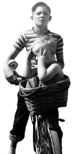
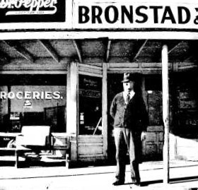

<!DOCTYPE html>  
<!--  https://validator.w3.org/#validate_by_upload+with_options  -->
<html lang="en">
<head> 
	<title>Clyde Purnell Bronstad</title>
    <link rel="icon" type="image/x-icon" href="../pic/Micro/0Ico-Clyde.jpg">       
	<meta http-equiv="content-type" content="text/html; charset=utf-8">
	<meta name="description" content="Memoire">
	<meta name="author" content="Gilbert Bronstad">
	<meta name="changed" content="20251212">             <!--[{ change date }] -->
	<meta name="viewport" content="width=device-width, initial-scale=1.0">
	
<link rel =stylesheet type="text/css" href="../css/aside.css">		
<link rel =stylesheet type="text/css" href="../css/Pat-sLife.css">
<link rel =stylesheet type="text/css" href="../css/nt-table.css">
<link rel =stylesheet type="text/css" href="../css/PatLetr.css">
<link rel =stylesheet type="text/css" href="../css/Walt-KinPics.css">
 <link rel="stylesheet" href="https://cdnjs.cloudflare.com/ajax/libs/font-awesome/4.7.0/css/font-awesome.min.css">
</head>
<body>
<p class="lastupdt-cursive"> &emsp;This page was last modified <span id="LastModDate"></span> EST.</p>
<script>  <!-- Date each page with last page update -->
document.getElementById("LastModDate").innerHTML = document.lastModified;
</script>
 
<div class="navbar"> 
  <div class="dropdown home-link">
    <a href="../../PatsLifeGit/index.html"> Patricia Memorial</a>
  </div>
  <div class="dropdown home-link">
    <a href="../index.html"> Family List</a>      
  </div>
    <div class="dropdown home-link">
    <a href="0P-ClydeBPics.html" target="_blank"> Clyde Pics</a>      
  </div>
</div>
 
<header>
<h2><u><b>Clyde Purnell Bronstad, born 1896-06-20 at Cranfills Gap, TX,<br> d 1989-12-26 at Clifton, TX</b></u></h2>
</header> 

<div-level-0>
<div class="sticky-menu" style=" display: block;">
<ul class="pagination">
  <li><a href="#">TOP&nbsp; </a> </li>
  <li><a href="#1896-1917">1896&nbsp; </a> </li>
  <li><a href="#1918-1929">1918&nbsp; </a> </li>  
  <li><a href="#1930-1939">1930&nbsp; </a> </li>
  <li><a href="#1940-1944">1940&nbsp; </a> </li>
</ul>  
<ul class="pagination"> 
  <li><a href="#1945-1949">1945&nbsp; </a> </li>
  <li><a href="#1950-1952">1950&nbsp; </a> </li>  
  <li><a href="#leave-the-Gap">FtWorth&nbsp; </a> </li>
  <li><a href="#Clyde-Obit">Obit&nbsp;  </a> </li>
  <li><a href="#bottom">END&nbsp; </a> </li>
</ul>
</div>
<div class="newspaper">
<div-grid-item class="Azure"> <!-- goes with g, r, m -->
<h3 class="rAzure pad100" id="ClydeBirthFamily">Birth Family of Clyde Purnell Bronstad</h3>
 
<p> Father, <a href="Bronstad_Gulbrand_O.html" target="_blank">Gulbrand Olson Bronstad</a> <a href="https://www.familysearch.org/tree/person/details/MFY9-W38" target="_blank">[FS Data]</a><i class="fa fa-external-link"></i> was born 1856-03-09 in Kirkenaer, Romedal Parrish, Hedermarken, Norway. He died 1937/07/18 in Cranfills Gap, TX, and is buried at St Olaf's Cemetery.	
</p>
<p>Clyde's Father, Gulbrand was a Norwegian immigrant. Gulbrand followed his brother, Christian Olson Bronstad, to the United States after Christian had become established in these United States. 
</p>
<p> Mother, <a href="Bronstad_Laura_W_Hansen.html" target="_blank">Laura Wilhelmina Hansen</a> <a href="https://www.familysearch.org/tree/person/details/MFY9-WQ9" target="_blank">[FS Data]</a><i class="fa fa-external-link"></i>was born 1873-09-11 in Bosque County, TX; she died 1950-04-24 in Cranfills Gap, TX, and is buried at St Olaf's Cemetery beside her husband.
</p>
<p>Clyde's Mother, Laura was first generation American, her Mother, Petra (Foss) Hansen Was born in Vestre Norway and Immigrated with her Father, Johannes Foss, and Mother, Berta Foss, to Four Mile, TX. Laura's Father, <a href="https://www.ancestry.com/discoveryui-content/search/collections/6742/records/7222395?nreg=1" target="_blank"> Hans Jorgen Hansen</a><i class="fa fa-external-link"></i>, was an immigrant from Denmark. </p> 
<p> Brother, <a href="Bronstad_Otis_J.html" target="_blank">Otis Julian Bronstad</a> <a href="https://www.familysearch.org/tree/person/details/K2VM-TTY" target="_blank">[FS Data]</a><i class="fa fa-external-link"></i> was born 1894-09-26 in Cranfills Gap, TX; he died 1960-11-14 in Clifton, TX, and is buried at St Olaf's Cemetery. 	
</p>
<p> <u><mark>Self</mark></u> <a href="Bronstad_Clyde_P.html" target="_blank">Clyde Purnell Bronstad</a> <a href="https://www.familysearch.org/tree/person/details/LJR8-QN5" target="_blank">[FS Data]</a><i class="fa fa-external-link"></i> ws born 1896-06-20 in Cranfills Gap, TX; he died 1989-12-26 in Clifton, TX, and is buried at St Olaf's Cemetery. 
</p>

<p> Sister <a href="Bronstad_Marie_P_Rohne.html" target="_blank">Marie Pernella (Bronstad) Rohne</a> <a href="https://www.familysearch.org/tree/person/details/271X-1S3" target="_blank">[FS Data]</a><i class="fa fa-external-link"></i> was born 1899-06-30 in Cranfills Gap, TX; she died 1985-05-17 in Ft Worth, TX, and is buried at St Olaf's Cemetery. 
</p>
<p> Sister <a href="Bronstad_Lorine_G_Hudson.html" target="_blank">Lorine Galinda (Bronstad) Hudson</a> <a href="https://www.familysearch.org/tree/person/details/LJR8-7MP" target="_blank">[FS Data]</a><i class="fa fa-external-link"></i> was born 1902-07-30 in Cranfills Gap, TX; she died 1981-04-23 in Holdenville, OK., and is buried in the Holdenville Cemetery. 	
</p>
<p> Brother <a href="Bronstad_Homer_H.html" target="_blank">Homer Hansen Bronstad</a> <a href="https://www.familysearch.org/tree/person/details/GCTL-PFW" target="_blank">[FS Data]</a><i class="fa fa-external-link"></i> was born 1907-07-13 in Cranfills Gap, TX; he died 1993-12-05 in Denton, TX, and is buried at St Olaf's Cemetery. 
</p>
<p> Sister <a href="Bronstad_Marguerite_C.html" target="_blank">Marguerite Christine Bronstad</a> <a href="https://www.familysearch.org/tree/person/details/GCTL-KCQ" target="_blank">[FS Data]</a><i class="fa fa-external-link"></i> was born 1909-07-07 in Cranfills Gap, TX; she died 1988-05-10 Pasadena, TX, and is buried at St Olaf's Cemetery 
</p>
 
<p>[FS Data]: Family Search data: https://www.familysearch.org</p>

 </div-grid-item>
<div-grid-item class="LavenderBlush"> <!-- goes with g, r, m -->
<p class="rLavenderBlush pad100" id="1Family">Family of Clyde and Louise Bronstad</p> 

<p> Wife, <a href="Walton_Louise_M_Bronstad.html" target="_blank">Louise Myrtle (Walton) (Holbrook)</a> <a href="https://www.familysearch.org/tree/person/details/LVZZ-KDL" target="_blank">[FS Data]</a><i class="fa fa-external-link"></i> Was born 1908-04-23 in Hamilton County, TX, she married Clyde 1936-07-19 in Waco, TX. She died 1989-08-18 in Ft Worth, TX, and is buried at St Olaf's Cemetery next to Clyde. 	
</p>
<p> Stepson 
<a href="Holbrook_Winnon_G(Bob).html" target="_blank">Winnon Glenson (Bob) Holbrook</a> 
<a href="https://www.familysearch.org/ark:/61903/1:1:K6GD-HW3" target="_blank">[FS Data 1]</a><i class="fa fa-external-link"></i> 
<a href="https://www.familysearch.org/tree/person/details/GXC1-QKY" target="_blank">[FS Data 2]</a><i class="fa fa-external-link"></i> was born 1932-05-08 To Louise and Marshall O Holbrook. Wascom, TX. He died 2012-11-21 in Brillion, WI. Part of his cremains are buried at St Olaf's Cemetery 	
</p>
<p> Son <a href="Bronstad_Gilbert_W.html" target="_blank">Gilbert Walton Bronstad </a>
<a href="https://www.familysearch.org/ark:/61903/1:1:K6GD-HW3" target="_blank">[FS Data 1]</a><i class="fa fa-external-link"></i> was born 1940 in Cranfills Gap, TX. 	 
</p>
<p> Daughter <a href="Bronstad_Bette_L.html" target="_blank">Bette Louise Bronstad</a> was born 1946.	 
</p>

</div-grid-item>

<div-grid-item class="MistyRose">
<p class="rMistyRose pad100" id="1896-1917">1896-1917</p>
     
   <h3>Clyde's Early Years.</h3>
   <h3> The <u>Clifton Record</u> (a Bosque County, Texas weekly newspaper) recorded the comings and goings in quiet neighboring areas like Cranfills Gap; all the better to increase readership beyond Clifton, TX. I mined microfilm of the <u>Clifton Record</u> for family references. I saw slimmest images of Clyde's past, much as one might see, passing a wooden fence, a kinetoscopic view of a neighbors back yard.</h3>
   <hr class="yr">
<h4>1896-06-20</h4>
<p><a href="https://www.familysearch.org/en/tree/person/LJR8-QN5" target="_blank"> 	Clyde Purnnell Bronstad</a><i class="fa fa-external-link"></i>, second child of &nbsp;Gulbrand Olson Bronstad and Laura Wilhelmina (Hanson) Bronstad, is born</p> 
<hr class="yr">  
<h4>1899-06-30</h4>
<p><a href="https://www.familysearch.org/en/tree/person/271X-1S3" target="_blank">Marie Pernella Bronstad</a><i class="fa fa-external-link"></i>, third child of &nbsp;Gulbrand Olson Bronstad and	Laura Wilhelmina (Hanson) Bronstad, is born.</p>
<hr class="yr"> 
<h4>1902-07-30</h4>
<p><a href="https://www.familysearch.org/en/tree/person/LJR8-7MP" target="_blank">Lorine Gelinda Bronstad</a><i class="fa fa-external-link"></i>, fourth child of &nbsp;Gulbrand Olson Bronstad and	Laura Wilhelmina (Hanson) Bronstad, is born.</p>
<hr class="yr">
<h4>1907-07-17</h4>
<p><a href="https://www.familysearch.org/en/tree/person/GCTL-PFW" target="_blank">Homer Hansen Bronstad</a><i class="fa fa-external-link"></i>, fifth child of &nbsp;Gulbrand Olson Bronstad and	Laura Wilhelmina (Hanson) Bronstad, is born.</p>
<hr class="yr"> 
<h4>1909-07-07</h4>
<p><a href="https://www.familysearch.org/en/tree/person/GCTL-KCQ" target="_blank"> 	Marguerite Christine Bronstad</a><i class="fa fa-external-link"></i>, sixth child of &nbsp;53 year old  Gulbrand Olson Bronstad and 36 year old Laura Wilhelmina (Hanson) Bronstad, is born.</p>
<hr class="yr">
<h4>1912-06-02 Per Wayne Rohne</h4>  
<p>Clyde was confirmed at the Rock Church in the Norwegian language on June 2, 1912.</p>
 <hr class="yr">
<h4>1914-10-02</h4>
<p>A. C Grimland, Charley Jermstad, Ole Anderson and <mark>Clyde Bronstad</mark> went down to Clifton since our last issue to see the train come in.</p>
<blockquote class="Cr1">At this date, motor cars and airplanes were a rarity; to move people or goods any distance in central Texas, it was by train. After rivers, the railroad was the builder of prairie cities, Cranfills Gap had neither, Clifton barely had both.
</blockquote>
<h4>1914-10-16</h4>
<p>Jno. Arneson, Ole Anderson, Helma Arrs or <mark>Clyde Bronstad</mark> can tell you all about the show. [presumably the Texas State Fair, Dallas $1.50 round trip on Santa Fe.]</p>
<h4>1914-11-01</h4>
<p>G. O. and Laura's first son, Otis Julian Bronstad&nbsp;weds&nbsp;Selma Tergerson, daughter of W. T. and Anna Tergerson.
</p>
<h4>1914-11-20</h4>
<p><mark>Clyde Bronstad</mark> went down to Clifton Monday to enter the Lutheran College in that city. . .</p>
 
<h4>1914-12-04</h4>
<p>Miss Helen Rohne, <mark>Clyde Bronstad</mark> Conley Tergerson and Justin Jenson came from the Lutheran College at Clifton Saturday. . .</p>
<hr class="yr">
<h4> 1915-03-12</h4>
<p>Justin Jenson, Conley Tergerson and <mark>Clyde Bronstad</mark>, who are attending the Lutheran College at Clifton from this section were with home folks from Saturday til Tuesday. Their school had holiday on account of Tuesday being Texas Independence Day.</p>
<h4>1915-04-09</h4>
<p><mark>Clyde Bronstad</mark> returned home from Clifton Saturday where he had been attending the winter term of the Lutheran College and went out to S. C. Jermstad’s to help Ole Anderson and other on the additions to Selmer’s house.</p>
<h4>1915-04-30</h4>
<p>Ole Anderson, Jno. Arneson, Helmer Aars and <mark>Clyde Bronstad</mark> are building the addition to the Schow building.</p>
<blockquote class="Cr2">The Schow brothers were in competition with G. O. Bronstad and Son's store.
</blockquote>

<h4>1915-07-09</h4>
<p><mark>Clyde Bronstad</mark>'s doing blacksmithing stunts at the Mickelson & Anderson shop.</p>
<blockquote class="Cr1"> It looks like an 18 year old Clyde tried going to college, but found it a mismatch for his interests. Perhaps carpentry or blacksmithing would be a better match. That is what youth is for, &mdash; finding one's place.
</blockquote>
<hr class="yr">
<h4>1916-03-03</h4>
<p>Clarence Brown, J. L. White and <mark>Clyde Bronstad</mark> went fishing yesterday, that is they thought they were fishing, but from the size of the finny tribe they brought back we thought they had been after bait. . . .</p>
<h4>1916-07-14</h4>
<p><a href="Bronstad_Gulbrand_O.html" target="_blank">G. O. Bronstad</a>, <a href="Bronstad_Laura_W_Hansen.html" target="_blank">wife</a> and three children, <mark>Clyde</mark>, <a href="Bronstad_Homer_H.html" target="_blank">Homer</a> and <a href="Bronstad_Marguerite_C.html" target="_blank">Marjary</a>(sic) went down to Waco to visit <a href="Bronstad_Gulbrand_O.html#GO_Family" target="_blank">relatives</a> Sunday. [G. O. Bronstad's] brother, Otto Olson Bronstad, and sisters Andrea, Syverine, and Karen lived in Waco.]</p>
<h4>1916-09-15</h4>
<p> <mark>Clyde Bronstad</mark> went down to take a look at the city of Austin Sunday morning.</p>
<h4>1916-11-03</h4>
<p>John Arnenson, <mark>Clyde Bronstad</mark>, Albert Giese and Earl Simmons of the Gap are at H Troll‘s working on his house. </p>
<h4>1916-11-17</h4>
<p>Monday morning G. O. Bronstad, Coin Tergerson, Rufus Jones and <mark>Clyde Bronstad</mark> went up to Brownwood where the two last named young gentlemen entered Howard Payne College. The News wishes the young men unbounded success in their efforts to secure an education.</p>
<hr class="yr">
<h4>1917-01-12</h4>
<p>Rufus Jones and <mark>Clyde Bronstad</mark>, who are attending the Howard Payne College at Brownwood spent the holidays at home.</p>
<h4>1917-04-06</h4>
<p>Rufus Jones who is attending Daniel Baker College in Brownwood came in Saturday to visit his parents Mr. And Mrs. W. W. Jones 'til Monday when he returned with <mark>Clyde Bronstad</mark>, who had been home for several days recuperating from at attack of Measles</p>
<h4>1917-06-01</h4>
<p><mark>Clyde Bronstad</mark> and Rufus Jones who have been attending Howard Payne College returned Friday.</p>
<h4>1917-07-27</h4>
<p><mark>Clyde Bronstad</mark> is now assistant freight conductor on the Air Line route with headquarters at Cranfills Gap</p>
<h4>1917-08-17</h4>
<p><mark>Clyde Bronstad</mark> went up to Fort Worth the first of the week.</p>
<h4>1917-09-14</h4>
<p><mark>Clyde Bronstad</mark> went down to Clifton Monday accompanied by his sister, Miss Marie, Miss Helen Rhone and Chris Rohne. The three are attending the Clifton Lutheran College.</p>

</div-grid-item>
<div-grid-item class="SeaShell">
<p class="rSeaShell pad100" id="1918-1929">1918-1929</p>
 

 <h3>The Great War and post war years years.</h3>
<h3>Clyde has a brief military experience, explores the world's possibilities and begins to settle down. </h3>
<h4>1918-08-30</h4>
<p>. . . <mark>Clyde Bronstad</mark> left Tuesday for Austin where he entered the mechanical department in the army. We predict he will make good and do his best to bring about the success of Uncle Sam’s armies&hellip;</p>

<h4>1918-10-05  University of Texas Certificate</h4>
<p><mark>Clyde P. Bronstad</mark> completed a 7 week course qualifying him as apprentice automobile engine assembler.</p>

<h4>1918-10-25</h4>
<p>. .  G O Bronstad and [illegible] saw Dr Pleunneke at Camp Stanley [illegible] . . .
They stopped at Camp Mabry to see <mark>Clyde Bronstad</mark> but that gentleman was entertaining <a href="#SpanishFlu">Spanish influenza</a> and they failed to see him.</p>
<hr class="yr">
<h4>1919-01-24</h4>
<p> <mark>Clyde Bronstad</mark> returned yesterday, clothed in a neat fitting <a href="0P-ClydeBPics.html#ClydeInUniform" target="_blank">uniform</a> and armed with an honorable discharge&hellip;</p>
<blockquote class="Cr1">Clyde's "Certificate of Military Service" shows his service dates from August 14, 1918 to January 17, 1919
</blockquote>
<h4>1919-09-26</h4>
<p>John and Willard Murphree, Charley Jermstad, <mark>Clyde Bronstad</mark>, Armind Sather, Near Rude and many others also went out to the oil fields last week.</p>
<blockquote class="Cr2">Men and women from Cranfills Gap often respond to the lure of good paying jobs in neighboring counties or even distant states.
</blockquote>
<h4>1919-12-</h4>
<p> <mark>Clyde Bronstad</mark> has returned from <a href="https://www.breckenridgeamerican.com/opinion/swensondale-settled" target="_blank">Swensondale</a><i class="fa fa-external-link"></i></p>
<hr class="yr">
<h4>1920-02-13</h4>

<p> <mark>Clyde Bronstad</mark> and Clarence Perry left Friday for the oil fields.</p>
<h4>1920-07-16</h4>
<p> <mark>Clyde Bronstad</mark> came in last week from Swensondale where he has been engaged in the garage business for some time, to visit home folks.</p>
<hr class="yr">
<h4>1921-01-07</h4>
<p><mark>Clyde Bronstad</mark> spent the holidays in this community.</p>

<h4>1921-03-04</h4>
<p><mark>Clyde Bronstad</mark> came in from the oil fields Saturday night to see home folks and friends. . .</p>
<h4>1921-06-18</h4>
<p>G. O. and Laura's first daughter, Marie Pernilla Bronstad&nbsp;weds&nbsp;Christian Ludvig Rohne, son of Evan Paulsen and Marianne Rohne.
</p>
<h4>1921-08-12</h4>
<p>A. H. Perry, Belvin Swenson, Ras Gaston, Rufe Wallace, <mark>Clyde Bronstad</mark> and maybe others went to Fort Worth yesterday</p>
<h4>1921-09-30</h4>
<p><mark>Clyde Bronstad</mark> is taking a look at the <a href="https://swco-ir.tdl.org/collections/756f9a9d-302f-433c-8b28-6410713ba27b?cp.page=1" target="_blank">Mexia oil fields</a><i class="fa fa-external-link"></i>.</p>
<hr class="yr">
<h4>1922-05-05</h4>
<p>Simp Grubaugh, <mark>Clyde Bronstad</mark> and Ruf Jones went out to Comanche Sunday. . . .</p>
<h4>1922-07-21</h4>
<p>Homer Bronstad , Paul Christenson, Alton Knudson and Jim Grimland went up to Meridian Friday morning, where they joined other Bosque County Boys Club meet. <mark>Clyde Bronstad</mark> took them to Meridian.</p>

<h4>1922-09-14</h4>
<p><mark>Clyde Bronstad</mark> buys a 1917 Dodge for $600.00</p>

<hr class="yr">

<h4>1923-07-27</h4>
<p>W. T. Tergerson, O. J. Bronstad, <mark>Clyde</mark> and Kell Sorenson made an aeroplane dive to Waco last week, making Waco from here in slightly over two hours. No insurance.</p>
<blockquote class="Cr1">Today (2025-01-08) the drive is less than 60 miles and can safely be done in an hour. In the past century roads have been engineered for better safety; in 1923 such a drive depended on stringing together the network of country roads made for local communication between farm and town, designed for the pace of a walking horse.<br><br>
Writing about comings and goings of the people of Cranfills Gap has been passed from the Clifton Record editor, James K Knight to my Uncle <a href="Bronstad_Marie_P_Rohne.html" target="_blank">Chris L Rohne</a>. It is his cautionary voice that brings up the lack of insurance.
</blockquote>
<hr class="yr">
<h4>1924-01-11</h4>
<p><mark>Clyde Bronstad</mark> has been the victim of rheumatism for the past week or more, to the extent he has been confined to the bed most of the time.</p>
<blockquote class="Cr2"><p>Clyde had life long problems of skeletal pain. He told me of back problems that began with the time he lifted a bale of cotton. (a cotton bale could be up to 800 pounds).</p>
</blockquote>
<h4>1924-01-18</h4>
<p><mark>Clyde Bronstad</mark> is in Glen Rose healthicating.</p>
<h4>1924-02-15</h4>
<p>Simp Grubaugh and <mark>Clyde Bronstad</mark> left Thursday morning for Marlin for the benefit of their health.</p>
<h4>1924-05-09</h4>
<blockquote class="Cr1">Marlin like Glen Rose had waters laden with minerals. In past, more than the present, health benefits were ascribed to many sources of mineral waters.
</blockquote>
<p>Messrs. <mark>Clyde Bronstad</mark>, J. J. Chrisianson, Joe Byrd and M. R. Shipp spent their last week end on San Saba in the hope of "reeling in" a big fish. However, not a member of the gang could look a sardine in his face Monday morning.</p>
<hr class="yr">
<h4>1925-04-19</h4>
<p>Mr. H. F. Hanson east of town is remodeling his dwelling, making modern improvements. Mr. Clyde Olson of Clifton is contractor of the job while Mr. <mark>Clyde Bronstad</mark> of this city is assisting in the construction.</p>
<h4>1925-06-26</h4>
<p>Mr. <mark>Clyde Bronstad</mark> and William Bertelson, youthful and adventurous, decided to fill up the gas tank on the latter's Ford and take a spin into Old Mexico, making the trip to Nuevo Laredo. However because of the rigid enforcement of the custom officers they were not able to fulfill the wishes of their friends in bringing back Mexican souvenirs. But to the most insistent, they brought home a wet sponge.</p>
<blockquote class="Cr2"> Bringing home a wet sponge puzzled me until my DUH moment. Of course, their friends wanted them to bring back a little ethanol. Thirsty folk lived the limitation of <a href="https://en.wikipedia.org/wiki/Prohibition_in_the_United_States" target="_blank">prohibition</a><i class="fa fa-external-link"></i>; many Lutheran's had little patience for the flighty currents of other Protestant theology.
</blockquote>
<h4>1925-12-11</h4>
<p>
Messrs <mark>Clyde Bronstad</mark> and S. W. Prather set a new record last week by driving to Waco in one hour and forty minutes. If this record is broken, probably some bones will be broken also, or maybe some speed cops will become slightly offended.</p>
<hr class="yr">
<h4>1926-05-14</h4>
<p>
Messrs <mark>Clyde Bronstad</mark> and J. J. Christianson were in Carlton Tuesday of this week making arrangements to put on the play, "Little Miss Jack: which was recently staged here under the auspices of the local P.T.A.</p>
<blockquote class="Cr1">I'm ever amazed at the number and variety of enterprises Clyde tried. Surely, the <u>Clifton Record</u> did not identify them all.
</blockquote>
<h4>1926-06-11</h4>
<p>Messrs <mark>Clyde Bronstad</mark>, J. J. Christenson and William Bertelson left Monday for Brownsville, points in between and other points in the Rio Grande valley where they will visit the country that is making California sit up and take notice.</p>
<h4>1926-06-18</h4>
<p>Messrs. <mark>Clyde Bronstad</mark>, J. J. Christenson and William Bertelson returned Tuesday from "the Valley". Outside of getting two fenders crushed in, three casings knocked off, a radiator pushed up to the wind shield, a front axle bent, a sprained wrist, etc., they had no accidents whatever.</p>
<blockquote class="Cr2">Clyde had a reputation for driving fast; there is no indication of responsibility for the accident(s) in this note.
</blockquote>
<h4>1926-11-05</h4>
<p><mark>Mr. Clyde P. Bronstad</mark> left for Marlin today where he will take treatment for rheumatism.</p>
<h4>1926-12-03</h4>
<p>Mr. <mark>Clyde Bronstad</mark> returned from Waco last Friday after having his tonsils removed in an effort to cure his rheumatism</p>
<hr class="yr">
<h4>1929-02-15</h4>
<p> Messrs. J. J. Christianson, G. Larson, <mark>Clyde Bronstad</mark>, Wm. Bertelson and Chris L. Rohne were rattlesnake hunting Tuesday and captured five big fat ones. They accused the scribe of making haste down a mighty brushy ravine about five times, but if we did, we didn’t know it. This sport justifies the exercise</p>
<h4>1929-06-14 </h4>
<p>Messrs. <mark>Clyde Bronstad</mark> and Monroe Sorenson left Thursday of last week for Pampa, Texas. They drove through in a car with Mr. Kell Sorenson who had been at home for a visit.</p>
<h4>1929-10-11</h4>
<p>Messrs. M. T. Sorenson and <mark>Clyde Bronstad</mark> left Sunday morning for Pampa where Mr. Kell Sorenson is employed by an oil company. They made the trip through in a car.</p>
<blockquote class="Cr1">Pampa prospered in the panhandle oil boom begun in 1916. Clyde is ranging further out in the pursuit of work. In the 21st century, the highway distance is 410 miles. In 1929 the driving distance would have been much greater.
</blockquote>

</div-grid-item>
<div-grid-item class="Beige">
<p class="rBeige pad100" id="1930-1939">1930-1939</p>

<h4>1930-06-13</h4>
<p>Announcements were received here last week announcing the marriage of Miss Lorina Bronstad to Mr. Douglas Hudson of Ada, Okla. Ms. Hudson is a daughter of Mr. and Mrs. G. O. Bronstad of this city. She is a graduate nurse of the Providence Sanitarium and at the time of her marriage, was supervisor of the Ada Hospital. We have never met Mr. Hudson, but we are sure he is a good man like all grooms are. </p>

<h4>1930-10-03</h4>
<p>Mr. Simp Grubaugh, apple baron, and Mr. <mark>Clyde Bronstad</mark>, chauffeur, returned Tuesday of this week from Roswell, N. M. with a truck load of apples. This is their second load, each round trip being approximately 1400 miles. Enroute they took a load of oats to Cisco. This summer, possible 150 truckloads of grain have been sold to Dublin, DeLeon, Tolar, Lipan, Stephenville and other points west.</p>
<blockquote class="Cb1"><p>One of Clyde's stories was of a near disastrous trip, returning down the mountains of New Mexico, down the steeply inclined, sharply turning mountain roads with a truck load of apples.</p>
<p> And the brakes failed &hellip;</p>
</blockquote>
<h4>1930-12-05</h4>
<p>Messrs. <mark>Clyde Bronstad</mark> and Binous Tindall were business visitors in Dallas last Friday</p>
<hr class="yr">
<h4>1932-06-24</h4>
<p>G. O. Jr., <mark>Clyde</mark> and Margaret Bronstad journeyed to Ada, Oklahoma last Tuesday taking with them Mrs. Douglas Hudson, who has been visiting here and whose home is in Ada</p>
<h4>1932-09-09</h4>
<p>Mr. <mark>G. O. Bronstad</mark> had as his guests Sunday morning two of his old friends, Dr. John Murphy of Temple and Dr. Jim Barnell of Johnson city. These two men were once residents of this city.</p>
<h4>1932-09-30</h4>
<h4>Knudson-Bronstad wedding</h4>
<p>Wedding bells chimed again in this city last Sunday evening, Sept. 11th when Miss Travis Knudson&nbsp; became the bride of Mr. Homer Bronstad . The wedding took place in the St. Olaf Lutheran Church at 6:30 o’clock with Rev. J. A. Urnes officiating, and with the sanctuary filled to its capacity with relatives and friends. A reception was given at the home of the bride’s parents, Mr. and Mrs. K. M. Knudson after the ceremony, to a host of relatives and friends.</p>

<h4>1932-12-16</h4>
<p>Saturday, Bailey Johnson and <mark>Clyde Bronstad</mark> took Julian Knudson to Carlsbad where he will stay for sometime. They report he stood the trip fairly well. He is a son of Mr. and Mrs. Sam Knudson.. . .</p>
<hr class="yr">
<h4>1933-06-02 </h4>
<p>Cranfills Gap was a very busy little city Monday, as the members of the Wool and Mohair Association delivered wool here. The members delivered 55,000 pounds , which was sold to Sam Smithwick of Lampasas at 20 cents per pound straight. During the noon hour, members were served barbecue, which was prepared by <mark>'˜Shorty’ Bronstad</mark> and Mr. Green. The most noticeable thing about the affair was the general optimism among the farmers who received nearly three times as much for wool this year as last.</p>


<hr class="yr">
<h4>1934-03-30</h4>
<p>Mr. <mark>Clyde Bronstad</mark>, Robert Dittrich and Bailey Johnson were in Waco Sunday.</p>
<h4>1934-09-21</h4>
<p>The Cranfills Gap High School had its formal opening last Monday morning. The devotional exercises were led by Rev. Farmer. Interesting and constructive talks were given by the following: Rev. J. A. Urnes, Mrs. Clara French Richards, Prof. E. B. Harris and Prof. E. P. Christensen. Miss Lurline Linn of Clifton rendered piano solo. The teachers for the school term just opened are as follows: Prof. Chauncy Ford, superintendent; Prof. Thilman Rogstad, coach; Mrs. E. B. Harris, English Mr. Charles Romine, principal of the grammar grades; Mr. Oran Knudson,  <mark>Mrs. Louise Holbrook</mark> and Miss Johnnie Broyles, teachers in the grammar grades. . . .</p>
<hr class="yr">
<h4>1935-02-01</h4>
<p>The Sociology, Home Economics and Civics classes are going to Dallas and Fort Worth this week-end. They are planning to visit several factories and plants, and will be special guests of the Ford Motor Company in Dallas Saturday. Mr. and Mrs. Ford, Mrs. Harris, Mr. Knudson, Miss Broyles and Mrs. <mark>Holbrook</mark> are the teachers who are going. We are taking both buses for transportation.</p>
<h4>1935-02-22</h4>
<p>Miss Broyles’ room had a Valentine party last Thursday afternoon together with Mrs. <mark>Holbrook</mark>’s room The visitors were Bobby <mark>Holbrook</mark> and Ray Miller.</p>
<h4>1935-08-23</h4>
<p>Mr. and Mrs. Binous Tindall, Rev. and Mrs. J. D. Farmer and family, <mark>Mrs. Louise Holbrook</mark> and son, Bobby and Mr. <mark>Clyde Bronstad</mark> are fishing on the Llano River this week. <A href="file:///C:/Users/gwbro/GitWork/Walt-Kin/pic/CPB38-0.jpg" target="_blank"> Picture, possibly</a>. . </p>
<blockquote class="Cb2"> Mother secured lodgings with Brother Farmer, Cranfills Gap's minister at the time. A woman alone with a small child needed the security.</blockquote>
<h4>1935-10-25</h4>
<p>Tuesday, October 22, <mark>Mrs. Louise Holbrook</mark>, teacher of the third and fourth grades, had charge of the program. It was a miscellaneous program, consisting of songs, readings and selections by the rhythm band.. This program was climaxed by a talk and interspersed with piano numbers of various types by the visiting Methodist evangelist, Rev. James V. Reed. Among the visitors at the assembly were Mmes. Bernt Bertelsen, Milton Stevens, Otto Witte, Charley Johnson, George Oglesby, Mason, Farmer, Miss Willie Mae Wallace, Rev. Farmer and Rev. Reed.</p>
<h4>1935-12-20</h4>
<p>The class in Home Economics staged the play, ‘Such a Night’ in the High School auditorium last Friday evening. The play was highly amusing and week rendered. <mark>Mrs. Louise Holbrook</mark> directed the play. &hellip;</p>
<h4>1936-03-20</h4>
<p>Mr. and Mrs. Binous Tindall, <mark>Mrs. Louise Holbrook</mark> and Mr. <mark>Clyde Bronstad</mark> attended the Fort Worth Stock Show in Fort Worth Sunday.</p>
<h4>1936-07-31</h4>
<p>Mr. and Mrs. W. T. Walton made announcement this week of the marriage of their daughter,  <mark>Mrs. Louise (Walton) Holbrook</mark>&nbsp; to &nbsp; <mark>Mr. Clyde Bronstad</mark>. The wedding ceremony was solemnified in the Lutheran church at Waco on Sunday, July 19.
The young couple spent their honeymoon in Galveston and in traveling through the coast country. They are now at home in Cranfills Gap, where Mr. Bronstad is successfully engaged in the grocery business. At present they are occupying apartments in the Meeks home, but Mr. Bronstad plans to build a beautiful new home in the near future.</p>
<p>Mrs. Bronstad, the former Miss Louise Walton of Hamilton, is a member of the faculty of the Cranfills Gap public school, one of the best institutions in this section of the state. She entered the school last year as a teacher and was re-elected. She is highly educated, being a graduate of the North Texas State Teachers College and well trained for her work, and is universally popular in Cranfills gap and surrounding country. she is gracious in manner, and is attractively accomplished and is a charming addition to Cranfills gap society circles.</p>
<p>The groom is a son of Mr. and Mrs. G. O. Bronstad, one of the representative families of long time residence in Cranfills gap. He is successful in business and is highly esteemed by a legion of friends to whom his new . . .</p>

<h4>1936-08-14</h4>
<p>Mr. and Mrs. Binous Tindall, <mark>Mr. and  Mrs. Clyde Bronstad</mark> and son and Rev. and Mrs. Farmer and son are on a fishing trip to the Llano River.  <A href="file:///C:/Users/gwbro/GitWork/Walt-Kin/pic/CPB38-0.jpg" target="_blank"> Picture, possibly</a></p>
<h4>1936-09-25</h4>
<p>The members of the faculty, each specialized in his or her respective field are: Miss Ruby Romine, primary work; Miss Geraldine Rowe, 3rd and 4th grades; Charles Romine, 6th grade and departmental work; Ira Dahl, 7th grade and high school history; <mark>Mrs. Clyde Bronstad</mark>, Home Economics Junior Business and departmental work; Mrs. E. B. Harris, high school English; Parks Windham, Shop, Mechanical Drawing, civics and general sciences; Homer Bronstad, high school mathematics.</p>
<h4>1936-11-20</h4>
<p><mark>Mrs. Clyde Bronstad</mark> was absent from school last Friday afternoon because of illness.</p>
<hr class="yr">
<h4>1937-07-23 </h4>
<h3>G. O. Bronstad Bosque Pioneer, Passes Away.</h3>
<p>G. O. Bronstad, pioneer Bosque County citizen, died at his home at Cranfills Gap, Sunday, July 19, 1937, at about 1:45 p. m. Funeral services were conducted Monday afternoon at the St. Olaf Lutheran Church with interment in the St. Olaf Cemetery.</p>
<p>Mr. Bronstad was born March 9, 1856, in Romedal, Hedemarken, Norway. In 1874, at the age of 18, he emigrated to the United States, coming direct to Bosque County, Texas, where he joined his brother, C. O., at Valley Mills. Here in Bosque County he at once made his home and in due time adopted this country as his own. During his long life he has been an active and contributing citizen.</p>
<p>From 1874 to 1886 he lived successively at Valley Mills, Norway Mills and Morgan, engaging in business and learning merchandising. In 1886 he moved to Cranfills Gap, and opened his business concern in Cranfills Gap. Thus Mr. Bronstad successfully rounded out more than fifty years in business in this one location.</p>
<p>
In the land of his nativity he was baptized, and after proper training, was confirmed in the Lutheran Church. To this faith, confessed early in life, he remained true to the end.</p>
<p>This now departed highly respected citizen, lived a quiet, unassuming life, sincere in spirit, sympathetic, generous, and cheerful. In spite of severe experiences in business, he remained of sympathetic and kindly nature, giving service to his friends from far and near. All men were greeted with a smile in the Bronstad Store.</p>

<p>Due to the absence of his pastor, Rev. W. J. Maakestad, Rev. P. E. Thorson of Norse conducted the funeral services, assisted by Rev. O. T. Boe of Clifton and Rev. Farmer, Cranfills Gap. Inspiring music was furnished by St. Olaf Male Quartet, and by Mrs. Troll and Miss Knudson in a vocal duet.</p>
<p>Beside his wife, he leaves six children, Otis, <mark>Clyde</mark>, and Homer, Margaret, Mrs. C. L. Rohne and Mrs. Douglas Hudson. These all reside at Cranfills Gap except Mrs. Hudson, who lives in Holdenville, Okla. He is also survived by one brother, Otto, of Waco, and three sisters, Carrie and Syverine Bronstad of Waco, and Mrs Pernella Anderson, Clifton.</p>
<p>The large gathering of sorrowing friends and relatives that overflowed the spacious church was something of an indication of the high esteem in which Mr. Bronstad was held. Representatives from every section of Bosque County, from Hamilton and Coryell Counties, came to pay tribute to a good friend, a christian gentleman, an high-class merchant, a man.
</p>

<h4>1937-08-27</h4>
<p>The faculty for the year consists of the following: Superintendent and teacher of Mathematics, Homer Bronstad; Principal of high school and teacher of industrial work, Parks Windham; English, Mrs. E. B. Harris; Home Making and Business, <mark>Mrs. Clyde Bronstad</mark>; Principal of Grammar School and teacher of history, Ira Dahl; Coach of Boys' Athletics and teacher of seventh grade, A. J. Bailey; fifth and sixth grade teacher, J. Ludwich; third and fourth grade teacher, Miss Geraldine Rowe; teacher of primary grades, Miss Ruby Romine. . .</p>
<h4>1937-12-19</h4>
<p>Mr. and Mrs. Binous Tindall and <mark>Mr. and  Mrs. Clyde Bronstad</mark> attended the Central Texas Methodist Conference in Fort Worth last Sunday. . . .</p>
<hr class="yr">


<h4>1938-01-07</h4>
<p>Mr. and Mrs. Otis Bronstad, Mrs. Chris Rohne, Mrs. G. O. Bronstad, Homer Bronstad and <mark>Clyde Bronstad</mark> went to Waco last Tuesday to attend the funeral of Miss Syverine Bronstad. Miss Bronstad passed away at her home in Waco on Monday. She was the sister of the late G. O. Bronstad.</p>
<h4>1938-04-29</h4>
<p><mark>Mrs. Clyde Bronstad</mark> was ill the latter part of last week, but is recuperating now.</p>
<h4>1938-07-15</h4>
<p><mark>Mr. and  Mrs. Clyde Bronstad</mark> and son, Bobby, have been vacationing and visiting in New Mexico during the past two weeks.</p>
<h4>1938-11-11</h4>
<p><mark>Mrs. Clyde Bronstad</mark> taught high school English during the absence of our teacher, Mrs. E. B. Harris. . . .</p>
<hr class="yr">
<h4>1939-02-10</h4>
<p><mark>Mrs. Clyde Bronstad</mark> was carried to the Providence Hospital at Waco Monday where she underwent an operation for appendicitis. . . .</p>

<h4>1939-06-02</h4>
<p><mark>Mrs. Clyde Bronstad</mark> and son, Bobby, spent several days last week with Mrs. Bronstad’s mother, Mrs. Walton in Hamilton.</p>
<h4>1939-07-14</h4>
<p>Mr. and Mrs. O. J. Bronstad and daughter, Charlene; <mark>Mr. and  Mrs. Clyde Bronstad</mark> and son, Bobby <mark>Holbrook</mark> were guests last Sunday in the home of Mr. and Mrs. Homer Bronstad at Blanket, Texas.</p>
<h4>1939-07-28</h4>
<p>Dr. Shipp, Elvis Johnson, B. O. Tindall and <mark>Clyde Bronstad</mark> saw the races at Waco Monday night.</p>

</div-grid-item>  
<div-grid-item class="HoneyDew">
<p class="rHoneyDew pad100" id="1940-1944">1940-1944</p>

<h3>A bigger war and a maturer man responds.</h3>

<h4>1940-01-12</h4>
<p>We are sorry that Mr. Ellingson, a teacher, is ill and cannot be with us.  <mark>Mrs  Clyde Bronstad</mark>  is teaching in his place while he is ill.</p>

<table>
<caption><a href="https://www.familysearch.org/en/1940census/" target="_blank">U S Census, April 11, 1940</a><i class="fa fa-external-link"></i></caption>
 <tr>
 <th>Name</th>
 <th>Sex</th>
	<th>Age</th>
	<th>Residence<br> Date</th>
	<th>Relation</th>
 </tr>
<tr><td>Clyde Bronstad </td><td>M</td><td>43 </td><td>1935 </td><td>head</td> 	
</tr>
<tr><td>Louise Bronstad </td><td>F</td><td>31 </td><td>1935 </td><td>Wife</td> 	
</tr>
<tr><td>W Glenson Holbrook </td><td>M</td><td>7 </td><td>1935 </td><td>Stepson </td>	
</tr>
</table>
Clyde is employed as a clerk in a grocery store.

<h4>1940-08-16</h4>
<p>The following spent Sunday at Blanket visiting in the home of Mr. and Mrs. Homer Bronstad: <a href="Bronstad_Marie_P_Rohne.html" target="_blank">Mr. and Mrs. C. L. Rohne</a> and family, Mr. and Mrs. H. F Hanson,  <mark>Mr. and Mrs. C. P. Bronstad</mark>, Mrs. G. O, Bronstad, Miss Marguerite Bronstad, Mr. and Mrs. O. J. Bronstad and family, Mr. and Mrs. LeRoy Troll and son, Richard; Mr. and Mrs. M. J. Bertelson and daughter Margie.
</p>


<blockquote class="Cy2">
<p>Presently the auto trip from Cranfills Gap to Killeen (Fort Hood) is 50 miles. In 1940, it was longer. For a brief while, Clyde worked at the PX at Fort Hood (Renamed Fort Cavazos); after WW II broke out, better applications for his skills emerged. 
<hr>
{From Wikipedia}<hr class="yr">
<b>Fort Hood</b>
<br><br>
During World War II, tank destroyers were developed to counter German mobile armored units. These were mobile anti-tank guns on armored halftracks or specially developed tanks. Wide-open space was needed for the tank destroyer testing and training, which Texas had in abundance. Andrew Davis (A.D.) Bruce was assigned to organize a new Tank Destroyer Tactical and Firing Center, and he chose Killeen, Texas for the new camp.[2] The War Department announced the selection on 15 January 1942. An initial acquisition of 180,000 acres (730 km2) was made, and it was estimated that the camp would cost $22.8 million for the land, facilities, and development of utilities. The date of completion was set for 15 August 1942.
<br><br>
About 300 families had to move from their homes to make room for the camp area and the communities of Clear Creek, Elijah, and Antelope were demolished to facilitate construction of the base. The old Sugar Loaf community, historically called the "Cradle of Killeen," provided the city with many of its first citizens in 1882. All that remains of the community is the mountain from which it took its name, located in the Fort Cavazos area. To lessen the burden of moving, the Army agreed to allow land to be used for grazing for a nominal grazing fee. This grazing arrangement still continues today.
<br><br>
In mid-August, the camp was occupied and the official opening took place on 18 September 1942. Camp Hood was named in February for the Confederate General John Bell Hood, who commanded Hood's Texas Brigade during the American Civil War, part of a series of new training camps named for notable regional military leaders together with Camps Carson, Campbell and Atterbury
</blockquote> 

<h4>1940-10-11</h4>
<p>A son was born to <mark>Mr. and Mrs. Clyde Bronstad</mark>. He has been named Gilbert Walton and is a fine, healthy child, He and his mother are reported to be doing nicely.</p>

<blockquote class="Cm2"><strong>Corner 2<sup>nd</sup> &amp; Clifton in Cranfills Gap, Texas.</strong><br>(~1935 - 1943)<br>

<h4>Hello World</h4>
 <p>As best as I can remember, I was born in my parents home, in my parent's bed, delivered by family friend, Dr J. R. Shipp, in a tiny Texas town where dwelt my grandmother, two uncles, and three aunts. So agreeable to greet land life in so familiar a place. That tiny pond of my own pee was getting too small.</p>

&nbsp;&nbsp;
<ul style="list-style-type:none;" class="Ncursive">
<li>Dad had built a house to please Mom. </li>
<li>Mom had borne a son to please Dad.</li>
<li>Family and kin were gentle, loving souls</li>
<li>All seemed well. </li>
</ul>
<p class="right"><u>Brother Bob, me, and cousins Maurice and Gorlyn.</u></p><br>&nbsp;<br>
<p>Mom's pressure cooker was a great toy till I tottered on to the steam vent and got a scar. Luckily it was between my eyes, not on left or right. Mom took the toy away though.</p>
<p>Bob was a fine horsey, but, lacking a crop, my using a toy mallet while commanding "giddyup." generated a life-long sore point for Bob.  </p>
<p>I used to think my hot refusal of baby food had to do with unsweetened pablum, now I think, for an infant, cow's milk is a poor substitute for Mother's milk. And that founded my plaint. The word 'weaning' came up often in my childhood.</p>
<br>
</blockquote>
<hr class="yr">
<h4>1941-04-18</h4>
<p> Mr. and Mrs. Homer Bronstad and two sons of Blanket, Texas, visited relatives here this week-end. . . .
Mr. and Mrs. Walton of Hamilton, and Miss Janetha Walton of Fort Worth were Sunday guests on the<mark> Clyde Bronstad</mark>  home.</p>

<h4>1941-06-19</h4>
<p><a href="https://www.familysearch.org/en/tree/person/M294-CF5" target="_blank">Anna Nestiby Bronstad</a><i class="fa fa-external-link"></i>, mother of 6 children, Clyde's aunt through his uncle Otto Bronstad, dies in Waco.
</p>

<h4>1941-11-14</h4>
<p><mark>Mr. and Mrs. Clyde Bronstad</mark>  were business visitors in Waco Saturday.</p>

<blockquote class="Cg1">"business visitors in Waco" frequently meant going to the largest nearby city to purchase goods not available in Cranfills Gap. Years later I was taken to Waco to buy the suit I wore to church, the shoes, shirts, socks, underwear and jeans I wore to school. 
</blockquote>
<h4>1941-11-21</h4>
<p>Mrs. S. H. Walton of Wichita Falls spent last Friday visiting in the home of her sister, <mark>Mrs  Clyde Bronstad</mark>.</p>
<h4>1941-12-26</h4>
<p><mark>Mr. and Mrs. Clyde Bronstad</mark> and son Bobby, were business visitors in Waco Monday.</p>
<hr class="yr">
<h4>1942-01-02</h4>
<p><mark>Mr. and Mrs. Clyde Bronstad</mark> and sons, Bobby and Walton, spent Christmas day with her parents, Mr. and Mrs. W. T. Walton of Hamilton&hellip;</p>
<h4>1942-01-30</h4>
<p><mark>Clyde Bronstad</mark> and James Grimland went to Fort Worth Monday to enter the aircraft school.</p>
<blockquote class="Cr2"> 
<p>For America, the war is not 3 months old, but Clyde and James are responding. A mixture of patriotism and economic self-interest led to this change, it foreshadowed a larger, familial uprooting soon to come. Attending aircraft school in Fort Worth meant staying away for a week, coming home only on weekends. Rural roads and 1930s vehicles meant driving was more demanding, more dangerous than today. I don't want to overplay their patriotism, good jobs were hard to find, especially in rural areas. </p>
<p>Ever since the resigning President D. D. Eisenhower cautioned us about the 'Military - Industrial Complex' I've embraced his wariness of the dangers inherent in the close arrangement.</p>
<p>At the same time, I have to thank the MIC for the many times it sustained Clyde, Louise and their children. Many of each of our life transitions would have been harder without it.</p>
</blockquote>
<h4>1942-02-06</h4>
<p><mark>Clyde Bronstad</mark> and James Grimland of Fort Worth visited here with their families over the week-end.</p>
<h4>1942-03-20</h4>
<p><mark>Mrs. Clyde Bronstad</mark>  has accepted the principalship of the Eulogy school, left vacant by the resignation of Mr. Lewis Powers, who has accepted employment in Waco.</p>
 <blockquote class="Cg1">
This, "accepted the principal-ship" phrase so arrested my attention because I don't remember 'school principal' being part of Mother's curriculum vitae. With Mother, I visited Eulogy, Texas [close by Glen Rose and Walnut Springs, TX] some year in the prior millennium. Watched in my mind and could not resurrect enough of Eulogy to now think a principal-ship there of great value to one's Vita.
<br><br>
Bundle that percept with the image of Mother plying 1942 back roads of Bosque County. These were far more primitive than you could imagine now. The round-trip Gap–Eulogy–Gap was about 90 miles.
<br><br>
The folks were grateful for the new opportunities, but they were stretched.<p>
</p>In Mother's absence, I was cared for by a local Gap woman, whom Mother dearly loved, at times and by Mother's niece, Vivian Embry, at other times.
<br><br>
Too, I owe lifelong gratitude the maker of the memorable, polychrome, starburst pattern quilt that delighted my eye and warmed my baby bones.
</blockquote>
<h4>1942-04-03</h4>
<p>Mrs. W. E. Mapp and son, W. E. Mapp Jr. of Odessa spent several days last week visiting in the home of her brother-in-law and sister, <mark>Mr. and Mrs. Clyde Bronstad</mark>.</p>
<h4>1942-04-17</h4>
<p><mark>Mr. and Mrs. Clyde Bronstad</mark>  and sons, Bobby and Walton, were guests Sunday in the home of her parents, Mr. and Mrs. W, T, Walton of Hamilton.</p>
<h4>1942-05-08</h4>
<p><mark>Mr. and Mrs. Clyde Bronstad</mark>  and sons, Bobby and Walton, and <a href="Bronstad_Marguerite_C.html" target="_blank">Miss Marguerite Bronstad</a> were business visitors in Fort Worth Saturday.</p>
<blockquote class="Cg2">This may indeed have been for business. After the death of her first husband, Marshall Holbrook in 1933, Mother, daughter of a farmer, plowed some of Marshall's life–insurance money into a modest Fort Worth rental property as a surety for their son, Bobby.
<br><br>
War work has Clyde in a more urban locale; he will have investigated the cost of rental property to relocate his family. The economics of massive war-time relocation will have chased rental prices to heights frightening for rural folk. Clyde and Louise will have responded, wanting competitive rents for their Fort Worth property.
<br><br>
Most likely, they would have relied on Uncle <a href="Walton_William_E.html" target="_blank">Embrey Walton</a>, a long time resident of Fort Worth, to look after their interest as rental agent. </blockquote>
<h4>1942-05-15</h4>
<p><mark>Mr. and Mrs. Clyde Bronstad</mark>  and sons, Bobby and Walton, spent Sunday with her parents, Mr. and Mrs. W. T. Walton of Hamilton. .Bobby remained to continue his visit for several days. .</p>
<h4>1942-05-22</h4>
<p>Mr. and Mrs. Wm. B. Bertelson and children, Christabel and Bellamy, were in San Antonio this week attending an insurance convention. While they were there, the visited in the home of Mr. and Mrs. Douglas Langford. They were accompanied by<mark> Clyde Bronstad</mark>, who was a business visitor.</p>
<blockquote class="Cg2"> San Antonio had an Army Air Base; Clyde may have been looking for a location to employ his newly acquired aircraft maintenance skills
</blockquote>
<h4>1942-06-05</h4>
<p><mark>Clyde Bronstad</mark>, Carl Glover, Clyde Tindall and Almer Nelson of Killeen spent the week-end with home folks.</p>

<blockquote class="Cg1"> 
One infers Clyde is still spending weekdays away from the Gap.
<br><br>
For a brief while, Clyde worked at the PX at the newly built Fort Hood near Kileen; as WW II preparations evolved, better applications for his skills emerged.
</blockquote>
<br>
<blockquote class="wiki">
{From Wikipedia}<hr> <a href="https://en.wikipedia.org/wiki/Fort_Cavazos" target="_blank">Fort Hood, now Fort Cavazos</a>&nbsp;<i class="fa fa-external-link"></i>, named in honor of Gen. Richard E. Cavazos, a native Texan and the US Army’s first Hispanic four-star general, was a military training facility during World War II, Its origin was the need for wide-open space to test and train with World War II tank destroyers. The War Department announced the location in January 1942, and the initial completion was set for that August.
<br><br>
During World War II, tank destroyers were developed to counter German mobile armored units. These were mobile anti-tank guns on armored halftracks or specially developed tanks. Wide-open space was needed for the tank destroyer testing and training, which Texas had in abundance. Andrew Davis (A.D.) Bruce was assigned to organize a new Tank Destroyer Tactical and Firing Center, and he chose Killeen, Texas for the new camp.[2] The War Department announced the selection on 15 January 1942. An initial acquisition of 180,000 acres (730 km2) was made, and it was estimated that the camp would cost $22.8 million for the land, facilities, and development of utilities. The date of completion was set for 15 August 1942.
<br><br>
About 300 families had to move from their homes to make room for the camp area and the communities of Clear Creek, Elijah, and Antelope were demolished to facilitate construction of the base. The old Sugar Loaf community, historically called the "Cradle of Killeen," provided the city with many of its first citizens in 1882. All that remains of the community is the mountain from which it took its name, located in the Fort Cavazos area. To lessen the burden of moving, the Army agreed to allow land to be used for grazing for a nominal grazing fee. This grazing arrangement still continues today.[citation needed]
<br><br>
In mid-August, the camp was occupied and the official opening took place on 18 September 1942. Camp Hood was named in February for the Confederate General John Bell Hood, who commanded Hood's Texas Brigade during the American Civil War,[3] part of a series of new training camps named for notable regional military leaders together with Camps Carson, Campbell and Atterbury.[4]
<br><br>
The original facilities provided housing and training sites for nearly 38,000 troops. In January 1943, an additional 16,000 acres (65 km2) in Bell County and 34,943 acres (141.41 km2) in Coryell County near Gatesville, Texas were purchased. The site near Gatesville was known as the sub-camp and later as North Camp Hood. During the war years, North Camp Hood housed nearly 40,000 troops and 4,000 prisoners of war, and was the site for the southern branch of the United States Disciplinary Barracks.[citation needed]
<br><br>
At the end of 1942, there were about 45,000 troops living and training at Camp Hood and in late June 1943 it peaked at almost 95,000 troops,[3] which was maintained until early 1944.
</blockquote>
<br>
<h4>1942-06-12</h4>
<p>Mrs. S. H. Walton came in last Saturday from her home at Wichita Falls for a visit in the home of her brother-in-law and sister, <mark>Mr. and Mrs. Clyde Bronstad</mark>. She returned home Tuesday accompanied by Mrs. Bronstad and sons, Bobby and Walton. . . .</p>
<h4>1942-06-19</h4>
<h4>H. F. Hansen Dies Suddenly Friday </h4>
<p><a href="https://www.familysearch.org/en/tree/person/G9MB-3T4" target="_blank">Hans Ferdinand Hansen</a><i class="fa fa-external-link"></i> was born Dec. 24, 1886. His parents were <u>Hans Jorgen Hansen</u> and <u>Petra Foss Hansen.</u> He was baptized in infancy at the St. Olaf Rock Church, and later renewed his baptismal covenant on the day of his confirmation, June 15, 1902, being confirmed by the Rev. J. K. Rystad.</p>
<p>He attended public and parochial schools under Prof. A. H. Denby Olsen and attended Clifton College in 1904.</p>
<p>He was united in marriage to <u>Gena Marie Tergerson</u> on Aug. 2, 1906 by the Rev. G. G. Odengaard. To this union were born five daughters, two of whom died in infancy. He is survived by his wife and three daughters, Jewel Pauline (Mrs. Alton Tindall of Phillips, Texas; Wilma Adeline (Mrs. Oscar Knudson) of Carlsbad, New Mexico, and Frances Lee (Mrs. Samuel Coffey) of Winslow, Arizona, and three grandchildren, A. W. Tindall, Jr., Mary Joyce Tindall and Roger Lane Coffey. He also leaves to mourn his passing, six sisters, Mrs. Mary Gaustad, Mrs. J. T. Jenson, <u>Mrs. G. O. Bronstad</u> and Mrs. Newman Hastings, all of Cranfills Gap; Mrs E. E. Erickson of Clifton and <u>Mrs. Jennie Jermstad</u> of Fort Worth, together with a large host of more distant relatives and friends.</p>
<p>Mr. Hansen and his bride settled on the Jorgen Hansen homestead, one of the most beautiful and imposing country homes in this section, pre-empted by his parents many years before, his Father and mother having come from Denmark and Norway respectively. In the atmosphere of parental love and devotion he and his loving wife reared their children, in mutual love and happiness, until the day of his sad and sudden departure.</p>
<p>He came to assume responsibility early in life, his father passing away when, Ferdie, as he was always called, was only twelve years old. Being the only son and the youngest in the family, his responsibilities were even greater. But he grew into manhood under steady Christian influence and became a pillar in the church and community, and serving as a trustee of the local Lutheran Church at the time of his death. All who knew Mr. Hansen loved him because of his kind and pleasing disposition. Likewise he loved his friends and neighbors and enjoyed every association, making the most of the more beautiful things of life. He loved and was loved. Deep in his heart there was more tenderness, more understanding, more genuine love and affection for his family and fellowmen than you find in any man, save and except the most deeply consecrated souls.</p>
<p>He departed this life at 1:45 o'clock Friday morning, June 12, 1942, at the age of 55 years, 5 months and 18 days. Without and seeming premonition, he had lived that he might depart to his Savior, suddenly. He prayed fervently that he may be allowed to live, but said, "All would be well." The Lord saw fit to call him home to his heavenly mansions, that he might live in glorious eternity and share early his eternal reward.</p>
<p>Funeral services were conducted from the home at 3:00 o'clock and from the Lutheran Church in Cranfills gap at 3:30 o'clock Sunday afternoon. Interment was made in the St Olaf Cemetery, with Rev. B. R. Maakestad officiating at all services.</p>
<p>Active pall bearers were Messrs. Jurgen Gaustad, Ennis Erickson, <mark>Clyde Bronstad</mark>, Homer Hastings, Justin Jenson and Walter A. Hanson. Honorary pall bearers were Messrs. S. A. Hanson, C. O. Johnson, Martin Hoel, Tilden Hastings, <u>K. M. Knudson</u>, J. E. Bryn, John Dahl Waldemar Olson, Hubbert Olson, Willie Schibler, S. C. Knudson, G. S. Knudson, W. P. Tindall, Otto C. Pederson and Charley Hoel.</p>
<p>A male quartet consisting of A. C. Grimland, T. S. Tergerson, O. C. Knudson and Levi Bryn sang, "Will the Circle Be Unbroken," at the home and "There Will Be Sunrise For Me" was sung at the church. Mesdames Clyde and Binous Tindall also sang "Good Night Here but Good Morning Up There."</p>
<p>Flower girls were Mrs. Paul Christenson,  <u>Loverne</u> and <u>Geraldine Rohne</u>, Mrs. Leroy Troll, <u>Marguerite Bronstad</u>, Rosa Lee Hastings, Maurine Rohne, Junelle Jenson and Gene Knudson.</p>
<p>   Blessed be his memory, - - <u>Chris L. Rohne</u> </p>
<h4>1942-07-05</h4>
<p><mark>Mr. and Mrs. Clyde Bronstad</mark>  and sons, Bobby and Walton, spent Sunday with her parents, Mr. and Mrs. W. T. Walton of Hamilton. . . .</p>


<h4>1942-07-10</h4>
<p>Business visitors in Waco Wednesday were  <mark>Mr. and Mrs. Clyde Bronstad</mark> and son, Bobby, and Mrs. Chris L. Rohne and daughters, LoVerne and Marynell.
</p>
<blockquote class="Cg1">Clyde's training comes to fruition in employment at Blackland Army Air Base, near Waco. Clyde will will have needed workweek lodging in Waco. It's likely he lodged with his <a href="Bronstad_Gulbrand_O.html#Otto" target="_blank">Uncle Otto</a> who retired after years of work in Waco. <a href="Bronstad_Marie_P_Rohne.html" target="_blank">Aunt Marie</a> and her daughters would have wanted to visit with their Uncle (and Great Uncle) Otto.
</blockquote>

<h4>1942-07-24</h4>
<p>Mr. and Mrs. W. E. Mapp and son, W. E. Mapp Jr. of Odessa spent several days last week visiting her sister, Mrs. Clyde Bronstad. . . .
<mark>Clyde Bronstad</mark>, employed by an aircraft training school at Waco, visited home folks over the week-end.</p>
<h4>1942-09-04</h4>
<p><mark>Clyde Bronstad</mark> of Waco spent Tuesday with home folks. . . .</p>
<h4>1942-09-18</h4>
<p><mark>Mrs. Clyde Bronstad</mark>  had the good fortune of winning a $200 prize in an Oxydol-Camay contest sponsored by Proctor & Gamble last week. Of this, Mrs. Bronstad received $100.00 and the other $100.00 being given to the local U. S. O. by terms of the contest.</p>
<h4>1942-10-30</h4>
<p><mark>Mr. and Mrs. Clyde Bronstad</mark>  and sons, Bobby and Walton and Miss Vivian Embrey were in Hamilton Sunday visiting relatives.</p>
<h4>1942-11-13</h4>
<p><mark>Mr. and Mrs. Clyde Bronstad</mark>  and son, Bobby, Derwood Johnson and Miss Vivian Embrey were in Fort Worth Saturday.</p>
<h4>1942-11-20</h4>
<p><mark>Clyde Bronstad</mark> returned to Waco Monday after a visit over the week-end with home folks.</p>

<h4>1942-11-27</h4>
<p><mark>Clyde Bronstad</mark> and Raymond Jenson of Waco spent the week-end with home folks</p>
<h4>1942-12-04</h4>
<p><mark>Mrs  Clyde Bronstad</mark>  and son Bobby, were business visitors in Hamilton Saturday.</p>
<hr class="yr">
<h4>1943-01-01</h4>
<p>Mr. and Mrs. W. E. Walton and children, Janetha and W. E. Jr., drove down from Fort Worth Sunday for a visit in the home of his brother-in-law and sister, <mark>Mr. and Mrs. Clyde Bronstad</mark>.</p>
<h4>1943-01-22</h4>
<p><mark>Mr. and Mrs. Clyde Bronstad</mark>  and sons were visitors in the home of her parents, Mr. and Mrs. W. T. Walton, Sunday.. . .
Clyde Bronstad of Blackland Army Flying School, Waco spent the weekend with home folks.</p>
<h4>1943-01-29</h4>
<p>Mr. and Mrs. W. T. Walton drove down from Hamilton Sunday for a visit in the home of their son-in-law and daughter, <mark>Mr. and Mrs. Clyde Bronstad</mark>.</p>
<h4>1943-02-19</h4>
<p><mark>Mr. and Mrs. Clyde Bronstad</mark>  and sons, Bobby and Walton, visited with her parents, Mr. and Mrs. W. T. Walton near Hamilton. . . .</p>
<h4>1943-03-19</h4>
<p><mark>Mr. and Mrs. Clyde Bronstad</mark>  and son, Bobby, were visitors in Fort Worth Saturday</p>
<h4>1943-04-16</h4>
<p>Mr. and Mrs. W. T. Walton of Hamilton were Sunday guests in the home of their son-in-law and daughter, <mark>Mr. and Mrs. Clyde Bronstad</mark>.</p>
<h4>1943-04-30</h4>
<p><mark>Mrs  Clyde Bronstad</mark>  and son, Bobby were business visitors in Hamilton last Saturday.</p>
<h4>1943-05-07</h4>
<p><mark>Clyde Bronstad</mark> and Archie Nelson of Waco were here over the week-end visiting home folksThe school board announces the reelection of its entire staff of teachers with the exception of <mark>Mrs  Clyde Bronstad</mark>  who resigned in order that she and her family might join Mr. Bronstad who is employed in war work.</p>
<h4>1943-05-21</h4>
<p>Mrs. S. H. Walton returned to her home in Wichita Falls Tuesday after a visit in the home of her Brother-in-law and sister, <mark>Mr. and Mrs. Clyde Bronstad</mark>. She was accompanied home by her nephew, Bobby <mark>Holbrook</mark>.</p>
<h4>1943-06-25</h4>
<p>Mr. and Mrs. W. T. Walton of Hamilton were here Sunday for a visit in the home of their son-in-law and daughter <mark>Mr. and Mrs. Clyde Bronstad</mark>. They were accompanied home by their grandson Bobby <mark>Holbrook</mark>. .</p>
<h4>1943-07-09</h4>
<p><mark>Clyde Bronstad</mark> and Archie Nelson of Waco spent the week-end with home folks.. . .
Mr. W. E. Walton and daughter, Nan of Fort Worth, were here Monday visiting his sister, <mark>Mrs  Clyde Bronstad</mark>.</p>
<blockquote class="Cg1">
By July or August of 1943, Louise,Bob and Wally have moved from Cranfills Gap to Bellmead, a northeast suburb of Waco, TX. Clyde was already working at Blackland AFB for at least a year; probably he stayed with his uncle Otto Bronstad before the family joined him at a rental house at 1224 Lewis St.<br><br>I helped with the move, holding on to one of the legs of my crib while men carried it to load on the truck.  Regrettably, I do not recall the date of the move. Few two year olds have a good concept of calendrical date.
</blockquote>

<h4>1943-08-20</h4>
<p><mark>Mr. and Mrs. Clyde Bronstad</mark>  and sons, Bobby and Walton, of Belmead were overnight visitors with his mother, Mrs. G. O. Bronstad Sunday.</p>
<h4>1943-09-03</h4>
<p>Mrs. J. R. Shipp and children recently of San Antonio, and <mark>Mrs  Clyde Bronstad</mark>  and sons of Bell Mead were here Tuesday visiting relatives and friends.</p>
<blockquote class="Cg1">
Deracination looks hard on these folks; gasoline rationing should have meant little travel, yet they did travel, keeping family sinews taunt. Workers in the military industry were entitled to 8 gallons of gasoline per week. The round–trip from Bellmead to Cranfills Gap must have cost at least 8 gallons. Clyde still had to get back and forth to Blackland Army Airfield, Louise to Bellmead's LaVega school.
<br><br>
I have a recollection so close to the substance of fiction that I do not recommend the recall as factual; it is surely total fancy. But one wonders, "How do people behave under conditions of 'rigid economic control'?"
<br><br>
Cpt. Shipp must have received his Captaincy (military commission to pay grade O-3), because he was an experienced doctor of medicine. {I'm partial to him because he delivered me.} With that combined status, he was over-qualified for all the gasoline and tires he needed. An X–card.
<br><br>
Do I recall a mission by Clyde, despite Mother's near withering caution, a mission for Clyde to siphon 10 gallons from Dr. Shipp's car's tank to the '36 Ford's tank?
<br><br>
Bronstads, Shipps and Tindalls played cards together in Cranfills Gap. If Clyde took all the risks – by siphoning the gas from Dr. Shipp's car and compensated his friend for the gas he must buy, how could the good doctor deny that?
<br><br>
Could Clyde do that just to visit his mother? I could not respect him if he could not. But then, this is just frail memory and speculation. His resources may have been adequate without ration–scoffing.
</blockquote>
<h4>1943-09-17</h4>
<p><mark>Mr. and Mrs. Clyde Bronstad</mark>  and sons, were here from Belmead Sunday for a short visit with relatives and friends.</p>
<h4>1943-10-29</h4>
<p><mark>Mr. and Mrs. Clyde Bronstad</mark>  and sons, Bobby and Walton, of Belmead were visited at the home of Mrs. G. O. Bronstad Saturday while en route to visit her parents, Mr. and Mrs. W. T. Walton of Hamilton. They were also accompanied by Miss Jacqueline Johnson of Waco who spent the week-end here with relatives..</p>
<h4>1943-11-12</h4>
<p><mark>Mrs  Clyde Bronstad</mark>  and sons, Walton and Bobby, returned to their home at Bell Mead Tuesday following a visit with her parents, Mr. and Mrs. W. T. Walton of Hamilton and her mother-in-law, Mrs. G. O. Bronstad of Cranfills Gap, . .</p>
<h4>1943-12-10</h4>
<p><mark>Mr. and Mrs. Clyde Bronstad</mark>  and sons, Bobby and Walton, of Bellmead were dinner guests Sunday in the home of Mr. and Mrs. Homer Bronstad. . . .</p>
<h4>1943-12-31</h4>
<p><mark>Mr. and Mrs. Clyde Bronstad</mark>  and sons, Bobby and Walton, of Bellmead were visitors in the Chris L. Rohne home Sunday. . . .</p>
<hr class="yr">
<h4>1944-01-14</h4>
<p>The following were guests in the home of <mark>Mr. and Mrs. Clyde Bronstad</mark>  of Bellmead Sunday: Mr. and Mrs O. J. Bronstad, Allen and Charlene, Miss Marguerite Bronstad, Mr. and Mrs Chris L. Rohne, Geraldine and Marynell.</p>
<p><mark>Mr. and Mrs. Clyde Bronstad</mark>  and son, Walton , were here from Bellmead Monday, for a short visit with relatives.</p>
<h4>1944-02-11</h4>
<p><mark>Mr. and Mrs. Clyde Bronstad</mark>  and sons, Bobby and Walton, were here Sunday from their home at Bellmead, visiting in the home of his mother, Mrs. G. O. Bronstad.. . .</p>
<h4>1944-03-10</h4>
<p>Mr. and Mrs. Binous Tindall and children, Virgil Ross and Katherine Ann, were in Bellmead Sunday visiting in the home of <mark>Mr. and Mrs. Clyde Bronstad</mark>.</p>
<h4>1944-03-24</h4>
<p><mark>Mr. and Mrs. Clyde Bronstad</mark>  and sons, Bobby and Walton, of Belmead were spent Sunday night and Monday with his mother Mrs. G. O. Bronstad and other relatives and friends.</p>
<h4>1944-04-14</h4>
<p><mark>Mr. and Mrs. Clyde Bronstad</mark>  and sons, Bobby and Walton, of Bellmead were here for a visit in the home of Mr. and Mrs. Chris L. Rohne.</p>
<h4>1944-04-21</h4>
<p><mark>Mr. and Mrs. Clyde Bronstad</mark>  and sons, Bobby and Walton, of Bellmead were here Tuesday, enroute to Hamilton to visit Mrs. Bronstad's parents, Mr. and Mrs. W. T. Walton. . . .</p>
<h4>1944-05-19</h4>
<p><mark>Mr. and Mrs. Clyde Bronstad</mark>  and sons came up from Bell Mead for a short visit his mother Mrs. G. O. Bronstad.</p>
<h4>1944-06-02</h4>
<p><mark>Clyde Bronstad</mark> drove up from Bellmead Tuesday to visit his mother, Mrs. G. O. Bronstad Sr., who has been ill for several days.</p>
<h4>1944-06-16</h4>
<p>Corporal G. O. Bronstad, who has been home on a 24-day furlough, left Tuesday for Fort Sam Houston. He was accompanied as far as Waco by his parents, Mr. and Mrs. O. J. Bronstad, his brother, Allen, sister, Charlene and Marynell Rohne and Elsie Lee Carlson. The young ladies, Charlene, Elsie Lee, and Marynell, however, remained at Bellmead for a visit in the home of <mark>Mr. and Mrs. Clyde Bronstad</mark>.
</p>
<h4>1944-06-23</h4>
<p><mark>Mr. and Mrs. Clyde Bronstad</mark>  and son, Walton, of Bellmead visited in the O. J. Bronstad and Mrs. G. O. Bronstad homes Tuesday.</p>
<h4>1944-07-14</h4>
<p><mark>Mr. and Mrs. Clyde Bronstad</mark>  and sons, were here from Bellmead Sunday visiting in the home of his mother Mrs. G. O. Bronstad . They were accompanied home by Mr. Bronstad's sister, Mrs. Douglas Hudson, and daughters of Holdenville, Okla., who spent a couple of days in Bellmead and Waco visiting relatives and friends.</p>
<h4>1944-08-25</h4>
<p>Mr. and Mrs. Homer Bronstad and sons, Gorlyn, Maurice and David, and Mrs. G. O. Bronstad and daughter, Marguerite, spent Sunday in Bellmead visiting in he home of <mark>Mr. and Mrs. Clyde Bronstad</mark></p>
<h4>1944-09-24</h4>
<p><mark>Mr. and Mrs. Clyde Bronstad</mark>  and sons were here from Bellmead Sunday for a short visit with relatives and friends. </p>
<h4>1944-11-03</h4>
<p><mark>Mr. and Mrs. Clyde Bronstad</mark>  and son, Walton of Bellmead, Mr. and Mrs. Oran Knudson and children of Hamilton were dinner guests Sunday in the home of Mr. and Mrs. Homer Bronstad.</p>
<h4>1944-12-01</h4>
<p><mark>Mr. and Mrs. Clyde Bronstad</mark>  and son, Walton, of Bellmead, were here Saturday for a visit with his mother, Mrs. G. O. Bronstad, and to attend the Bronstad-Murphree wedding.</p>
<blockquote class="Cm2"><strong>1224 Lewis Ave. in Bellmead, Texas.</strong><br>(~1943-1945)<br>

<h4>Occupants</h4>
<p>I slept between Clyde and Louise in the back bedroom double bed, my middle name could have been 'contraceptive'. Bob had the front bedroom all to himself. Frequently there was a fifth person there, but I don't remember who or where she slept. Some times "she" was Vivian Embrey, one of Mother's first cousins. During wartime there were better and higher uses for able workers, and Vivian probably responded accordingly.</p> 

<h4>Crayons</h4>
<p>Clyde heated the living room with a massive, fuel oil furnace. The outside was enamel brown. I loved Crayolas. I loved the intense colors of Crayons but found them faithless. Yes, one could draw a line on paper with the red crayon, but it had betrayed the  brilliance of the Crayola, the drawn line lost saturation. It betrayed it's promise.
</p>
<p>But if one applied the Crayola to the heated, brown enamel surface, one could draw a drippy line that retained the saturation of the wax crayon. This was wonderful; Crayolas became faithful; they fulfilled, the red, yellow, green, violet and blue promises, even white kept it's promise on brown enamel.
</p>
<p>The smell of liquid Crayola soon got my parents attention; they rushed out of the kitchen into the living room, alerted by an unfamiliar odor. They cavalierly stopped my artistic endeavors with some incomprehensible warning about fire. I saw no fire, but stop I must.</p>
<p>Later, I discovered my artistry could be out of view if I crawled behind the furnace on my belly, I might reached for Michelangelo‘s artistic height, though prone on the floor. The odor continued to give me away. Soon spring ended the need for heat and withdrew my magic canvas.</p>

<h4>Clyde and Louise worked.</h4>
&nbsp;&nbsp;
<p>And so did Bob for a while. In addition to school work, Bob had a bike and a paper route delivering one of the Waco newspapers of the time. Until some thuggish lads beat up Bob. His face bruised, forearms checkered with menacing scabs. Father and Mother thought it better Bob quit the job and avoid danger.
</p>
<p class="right"><br><u>Wally in Bob's workplace.</u></p><br>&nbsp;<br>
<p>Mother left to teach at LaVega Public School before I woke. Father had the afternoon shift at Blackland Army Flying School, he left before Mother got back home. I didn't like being left alone, so watching father get ready for work, I got into the '36 Ford before he got in and would not leave. 
</p>
<p>That was a problem for Clyde, he could not take me to Blackland, could not leave me at home because I threatened to follow him on foot. He drove along struggling with the dilemma I posed. He grasped upon, "I'll have to give you to a Nigger Lady." The threat didn't really process until Clyde pulled alongside an Afro-American woman walking along the roadside; Clyde rolled down my car window and said, "Hey lady, would you like a little boy?". I looked into her strange, astonished face and screamed, "I'll stay home! I'll stay home!" 
</p>
<p>Clyde ended such further strife by locking the car doors at home. But that didn't fix my need for security, for having an adult around. There was a war going on, who'll save me from the Nazis? One day, as Clyde slid in behind the wheel, door half closed, I ran up, jumped on the running board and grasped the external hinge of the '36 Ford driver's door. When the door fully shut, the closing hinge burst my right middle finger like a balloon. I remember no more, but I'm sure the event was traumatic for both Clyde and me. 80 years later the finger is still looks slightly mangled.
</p>
<p>What to do with toddler Wally during wartime? Too young to become a latch-key kid, Mom took me to day care with periods of outdoor play (A play mate introduced me to pill bugs.), naps on cots (I was scandalized that boys and girls went together in the same toilet room.), and finger paint or other arts. </p>
<p>On one rare visit to Mother's school, I was drawn to the many profiles of American, Nazi and Japanese war planes, arrayed on the walls above eye level. I learned 'theirs' from 'ours', bombers from fighters.</p>
<p>Like our war birds flying oft above, school posters, radio news and bulletins, and movie newsreels kept the Axis menace ever close to our thoughts.

<h4>Great genitalia show off.</h4>
<p>I knew no preschoolers south of our house, but quite a few of us were to be found to the north. Next door was Gordon Johnson with whom I might play. Gordon connected with more children north to the street corner. One bright day, a juvenile organizing genius had set up among 8 or so preschoolers a deal whereby one child stood security guard against adults at the garage door while boys and girls within might drop their pants to reveal their genitalia to each other.</p>
<p>Well I wasn't going to miss out on that. I had already intuited that sex was powerful, hidden and forbidden, no way I would walk from this apocalypse. </p>
<p>The planning was good but the staging dreadful. With garage doors shut there was almost no light for seeing. Actors were skittish lest a parent appear and punish taboo breakers. The Bellmead 'Naughty Bits Review' broke up almost before it began. Likely there were more performances, but none included me.</p>

<h4>Visitors.</h4>
<p>The <b><u>Clifton Record</u></b> records many visitors to our house; I recall but two. Mother's sister Aubrey's visit was memorable because of the rainy night drive to the train station to pick Aubrey up (or send her off, not sure)</p>
<p>Mother's sister Annie Joy made her visit memorable because she tried to stick me with a nickname. As a bow-legged preschooler with a ten inch stride, my corduroy cuffs whipped past each other with a 'thwip-thwip' sound. Probably amused at my sound, she called me "twisty britches".</p>
<p> What has stayed with me is the preparation. Visitors meant large meals and large meals centered around one or more chickens. Clyde would dispatch a live bird by lodging it's neck between crossed clothes line wires. Then flip the bird to shorten it's suffering. Plunging the bird in a pail of boiling hot water helped Louise pluck the chicken clean of feathers. Then she or Clyde would butcher the bird(s) into what became dinner-table chicken anatomy. Drum stick, thigh, back, wing, breast, liver, gizzard, neck, wish bone.
<br>
<h4>Medicine.</h4>
<p>Childhood anemia meant I could either get iron shots in my butt or eat animal liver. Promising I'd eat liver put off the jabs and eventually I learned to like liver.</p>

<p>On my parents turn to promise, they promise me all the ice cream I wanted if I'd submit to Dr Aid's removing my tonsils. Dr Aid laid me down on an ironing table and began to suffocate me with a handkerchief while my parents held me down. He poured perfume on the handkerchief and I recall no more till I awoke. Groggy, throat on fire, I wanted no ice cream. Nothing. Trust corroded.</p>

</blockquote>
</div-grid-item>  
<div-grid-item class="Azure">
<p class="rAzure pad100" id="1945-1949">1945-1949</p>

<h3>1945-1949.</h3>
<h4>1945-02-16</h4>
<p>Mr. and Mrs. <mark> Clyde  Bronstad</mark> and son, Walton, of Bellmead, were here Saturday for a short visit with his mother, Mrs. G. O. Bronstad, and other relatives…</p>
<h4>1945-02-23</h4>
<p><mark>Mr. and Mrs. Clyde Bronstad</mark>  and sons, Bobby and Walton, of Bellmead, were here Saturday for a short visit with his mother, Mrs. G. O. Bronstad, and other relatives… .</p>
<h4>1945-04-20</h4>
<p><mark>Mr. and Mrs. Clyde Bronstad</mark>  and sons, Bobby and Walton, of Bellmead, spent Saturday night with relatives and friends. The main reason for their visit was to visit Mr. Bronstad’s brother, Homer Bronstad, on leave from San Diego, California… .</p>
<h4>1945-05-18</h4>
<p>Guests in the Mrs. Homer Bronstad home Sunday were Mr. and Mrs. Mervin Knudson and Miss Lo Verne Rohne of Fort Worth, <mark>Mr. and Mrs. Clyde Bronstad</mark>  and sons, Bobby and Walton of Bellmead, Mr. and Mrs. Oran Knudson and children, Myron, Kathryn Sue and John Benjamin and Mr. and Mrs. Ted Christenson and daughter, Mary Carolyn of Hamilton; Mr. and Mrs. K. M. Knudson, Mrs. G. O. Bronstad and daughter, Marguerite, and Mrs. Harry Blue and daughter, Rebecca of Cranfills Gap.</p>
<h4>1945-06-22</h4>
<p><mark>Mr. and Mrs. Clyde Bronstad</mark>  and sons, Bobby and Walton, of Bellmead, were in Cranfills Gap Tuesday visiting his mother, Mrs. G. O. Bronstad, en route to Hamilton for a visit with Mrs. Bronstad’s father and mother, Mr. and Mrs. W. T. Walton… .</p>
<h4>1945-09-07</h4>
<p><mark>Mr. and Mrs. Clyde Bronstad</mark>  and son, Walton, of Bellmead, were here Sunday attending the Jenson Golden Wedding Anniversary and visiting his mother, Mrs. G. O. Bronstad, en route to Hamilton for a visit with her parents, Mr. and Mrs. W. T. Walton</p>
<h4>1945-09-14</h4>
<p>Mrs. Homer Bronstad and sons, Gorlyn, Maurice and David, Mrs G. O. Bronstad and daughter, Marguerite, Mr. and Mrs. Chris L. Rohne and daughters, Geraldine and Marynell were dinner guests Sunday in the home of <mark>Mr. and Mrs. Clyde Bronstad</mark>  of Belmead. </p>
<h4>1945-10-19</h4>
<p><mark>Mr. and Mrs. Clyde Bronstad</mark>  and sons, Bobby and Walton, of Bellmead, were in Cranfills Gap visiting his mother, Mrs. G. O. Bronstad and other relatives.</p>
<blockquote class="Cr1">
<p>This trip had a visit to the Bronstad Store run by Uncle Homer and Aunt Travis. They were so glad to see us. They showed us shelves stocked with school supplies. I scanned the merchandise and took a box of Crayolas.</p>
<p> Clyde and Louise had not observed the 'present' I'd taken from Aunt and Uncle. On going back to the car Mother saw and so disapproved. She returned my 'present' to Homer and Travis. Commerce so confused me, "but they were so glad to see me, and they had more than they used."</p>
<p> Clearly, it was not easy getting on with this world.</p>
</blockquote>


<h4>1945-11-02</h4>
<p>Guests in the home of Mr. and Mrs. Homer Bronstad Sunday were Mr. and Mrs. Mervin Knudson and Miss LoVerne Rohne of Fort Worth, <mark>Mr. and Mrs. Clyde Bronstad</mark>  and sons, Bobby and Walton, of Bellmead, and Mr. and Mrs. Oran Knudson and children, Myron, Kathryn Sue and John Benjamin, of Hamilton.</p>

<blockquote class="Cr1">&emsp;&emsp;
<p>It looks like all the family have returned to Cranfills Gap from Bellmead sometime in November 1945. Did Mother not teach at all in the 1945 school year? Why did they not return to the house Clyde built on the corner of Clifton and 2<sup>nd</sup> Streets? When and how did ownership of that house transfer?</p>

</blockquote>

<h4>1945-11-16</h4>
<p>In a deal consummated last week, Messrs. <mark>Clyde</mark> and Homer Bronstad purchased the Reesing Grocery from Mr. Otto Reesing. The change of ownership is effective Nov. 19.</p>
<h4>1945-12-07</h4>
<p><mark>Mr. and Mrs. Clyde Bronstad</mark>  and son, Walton and Mrs. G. O. Bronstad and daughter, Marguerite, were visitors in Waco last Thursday.</p>
<h4>1945-12-28</h4>
<p><mark>Mrs  Clyde Bronstad</mark>  and son, Walton, spent Sunday in Hamilton visiting her parents, Mr. and Mrs. W. T. Walton and her sister,<u> Miss Aubrey Walton</u> of Washington, D. C.</p>
<blockquote class="Cb1">&emsp;&emsp; Aunt Aubrey had tuberculosis. At one point in her life she lived in a Will Walton constructed, box frame, room off the front porch of the W T Walton home. It was memorable for having a barn style sliding door, and white walls decorated with green hand prints of Aunt Aubrey.<br> Mother thought it clever decoration, I think it Aunt Aubrey's affirmation of her own existence after experiencing the withering threat of tuberculosis before antibiotics.<br>Mother may have thought that too, but deferred trying to explain that to a child.
</blockquote>
<hr class="yr">
 
<h4>1946-mm-dd</h4> 	
<p>To Clyde and Louise, <a href=" https://www.familysearch.org/en/tree/person/details/PS19-RCB " target="_blank">Bette Bronstad </a><i class="fa fa-external-link"></i>  is born.
</p>
<h4>1946-03-01</h4>
<p><mark>Mrs  Clyde Bronstad</mark>  and son Walton, spent Saturday in Waco.</p>

<blockquote class="Cg2">Time to dress the lad for Easter. The cheap wool suit was just torture, it was a neck to ankle <A href="https://en.wikipedia.org/wiki/Cilice" target="_blank">hair shirt</a><i class="fa fa-external-link"></i>. This was not intentional "instrument of penance", I just have very prickly skin. Having to wear it made me hate going to church. Conceivably the initial step on a path to atheism.<br><br>
Downtown Waco was immense to a lad whose notion of civilization were calibrated by village Cranfills Gap. I could gawk at the policeman's sidearm, multistory brick buildings, traffic lights, store windows approaching the size of some Cranfils Gap dwellings. The <a href="https://en.wikipedia.org/wiki/Pneumatic_tube" target="_blank">pneumatic messaging systems</a><i class="fa fa-external-link"></i> in the department stores was magical technology. 
</blockquote>

<h4>1946-03-15</h4>
<p><mark>Mr. and Mrs. Clyde Bronstad</mark>  and sons, Bobby and Walton, spent Sunday in Fort Worth, visiting in the home of Mr. and Mrs. W. E. Walton.. . .</p>
<h4>1946-05-17</h4>
<p><mark>Mr. and Mrs. Clyde Bronstad</mark>  and sons were in Hamilton Sunday for a Mother’s Day visit with Mrs. Bronstad’s father and mother, Mr. and Mrs. W. T. Walton.</p>
<h4>1946-05-31</h4>
<p><mark>Mr. and Mrs. Clyde Bronstad</mark>  and sons spent Sunday with their parents and grandparents, Mr. and Mrs. W. T. Walton of Hamilton.</p>
<h4>1946-06-07</h4>
<p><mark>Mr. and Mrs. Clyde Bronstad</mark>  and sons spent Sunday in Fort Worth visiting in the home of her brother, W. E. Walton and family.
<mark>Mrs  Clyde Bronstad</mark>  and sons, Walton and Bobby, left Sunday for Odessa for a visit with her sister, Mrs. W.E. Mapp and family.</p>
<blockquote class="Cb1">The working yard of Mapp Tank Company was literally the side yard of the Mapp residence. Odessa was a strange land; distinctly arid. Trees hugged the houses, dependent on humans for water.  The working yard was filled with massive steel arcs of oil storage tanks awaiting relocation and assembly near remote field oil pumps.

<br>&nbsp;<br>Uncle Ernest was clearly more prosperous than we, he owned multiple flat bed trucks, a new Mercury automobile, and an 8mm projector. We watched Abbott and Costello features outside at night in the back yard. 
</blockquote>
<h4>1946-08-09</h4>
<p><mark>Mrs  Clyde Bronstad</mark>  and sons, Bobby and Walton, spent several days in Fort Worth last week on account of the illness of Mrs. Bronstad’s mother, Mrs. W.T. Walton of Hamilton.</p>
<blockquote class="Cb1">Grandmother Ethel had diabetes, I used to watch in childish horror as she self injected insulin.
</blockquote>
<h4>1946-08-09</h4>
<p>Miss Martha Reesing and <mark>Mrs  Clyde Bronstad</mark>  entered together, dressed in gowns of blue and black respectively with sweet pea corsages. Miss Reesing played the traditional wedding music and also accompanied Mrs. Bronstad as she sang "I Love You Truly." and "The Lord's Prayer."</p>
<blockquote class="Cb1">In the past, people were more attuned to entertaining one another with personally developed skills. The remarkably frugal Will Walton bought a piano for his home, presumably to enable the social development of his children. The same was true for the comparably frugal Gulbrand Bronstad who had a piano and a pump organ in his home.
<br>&nbsp;<br> In this case, the entertainment was for Cousin LoVerne's wedding.
</blockquote>
<h4>1946-08-16</h4>
<p>Miss Lo Verne Rohne, bride elect of Mr.Ray Schibler, was honoree at a miscellaneous shower at the home of Mrs. Homer Bronstad on July 31, 1946. Co-hostesses for the afternoon were Mesdames<mark> Clyde Bronstad</mark>, Otis Bronstad, Gunder Larsen and Miss Marguerite Bronstad.</p>
<h4>1946-09-06</h4>
<p><mark>Mr. and Mrs. Clyde Bronstad</mark>  and sons, Bobby and Walton, returned Tuesday from Wichita Falls, following a visit with Mrs. Bronstad’s brother-in-law and sister, Mr. and Mrs. S.H. Walton</p>

<h4>1946-10-04</h4>
<p>Mr. and Mrs. W. T. Walton of Hamilton visited in the home of their daughter and son-in-law, <mark>Mr. and Mrs. Clyde Bronstad</mark>  Tuesday. . . .</p>
<blockquote class="Cb1">The Waltons traveled far less in the time of my memory. Presumably WIll’s faculties declined. Treatment for cataracts were relatively primitive. Ethel never learned to drive. Roadways from Hamilton to Cranfills Gap changed with the completion of Route 22, old pathways fell into disuse after bridge maintenance on older bridges ceased.
</blockquote>
<h4>1946-10-25</h4>
<p><mark>Mr. and Mrs. Clyde Bronstad</mark>  and son, Walton were in Hamilton Thursday afternoon of last week to attend the funeral of Mrs. Bronstad’s aunt, Mrs. J. B. Walton, of Carlsbad, N. M.</p>
<h4>1946-11-08</h4>
<p>Mrs. Nell Posey of Waskom spent several days last week visiting in the<mark> Clyde Bronstad</mark>  home. . . .</p>

<blockquote class="Cm2"> <a href="https://www.familysearch.org/en/tree/person/details/M5ZR-NGG" target="_blank">Nell Posey</a><i class="fa fa-external-link"></i> was Bob Holbrook's Great Aunt, Maternal Aunt of Bob's Father <a href="https://www.familysearch.org/en/tree/person/details/GNSR-XV2" target="_blank">Marshall Holbrook</a><i class="fa fa-external-link"></i>. So nice of her to keep up family connections with her Great-nephew and his Mother. Otherwise Mother had very little connection with her first husband, <mark>Marshall Holbrook’s</mark> relatives. Mother thought they blamed her for Marshall’s death.
</blockquote>

<h4>1946-11-22</h4>
<p>Mrs. W. T. Walton of Hamilton spent several days this week visiting in the home of her daughter and son-in-law, <mark>Mr. and Mrs. Clyde Bronstad</mark>. . . .
<h4>1946-11-29</h4>
<p>
Mrs. S. H. Walton and little daughter, Sharon Sue, of Wichita Falls spent several days last week visiting in the home of her sister and brother-in-law, <mark>Mr. and Mrs. Clyde Bronstad</mark>. . . .</p>
<blockquote class="Cb1">This would have been at the Blum house, an old farm house with abundant large rooms.
</blockquote>
<hr class="yr">
<h4>1947-01-17</h4>
<p>Mrs. W. T. Walton returned to her home at Hamilton Tuesday after a few days' visit in the home of her daughter and son–in–law, <mark>Mr. and Mrs. Clyde Bronstad</mark> and especially to see her new granddaughter.
</p>
<blockquote class="Cm2">Such visitations are probably not simply familial, or cultural, they are probably at the level of our genus. Human births are extremely stressful and engage life long attachments. Mother and sisters slip-in to see: "girl could you use some help?"
</blockquote>
<!-- <blockquote class="Cb2">Apparently Ethel’s visit was to assist Louise in the care of her third child, Bette. Ethel's 9<sup>th</sup> grandchild. (Janetha June, Embrey Jr., Nan, Sharon Sue, Bobby, Walton, Bette, Dick and Mylinda)
</blockquote> -->
<h4>1947-02-07</h4>
<p>Mrs. W. T. Walton of Hamilton and Mrs. S. H. Walton and little daughter, Sharon Sue, of Wichita Falls were here the first of the week visiting in the home of <mark>Mr. and Mrs. Clyde Bronstad</mark>. The Mmes. Waltons are mother and sister of Mrs. Bronstad.</p>
<!-- <blockquote class="Cb1">Then Louise's older sister had to come too.
</blockquote> -->
<h4>1947-04-11</h4>
<p>Visitors in the <mark>Mr. and Mrs. Clyde Bronstad</mark>  home Sunday were Mr. and Mrs. W. E. Mapp and children, Dickie and Malinda Darline, of Odessa, and Mr. W. T. Walton of Hamilton.</p>
<blockquote class="Cb2">And her younger sister. Families keep connective sinews taunt. It's not just a human thing, it's a mammalian thing, at least among social mammals.
</blockquote>
<h4>1947-05-09</h4>
<p>In a deal that was consummated last week, Messrs. Clyde and Homer Bronstad, who since 1945 have operated the Bronstad Store as a partnership, sold their stock of merchandise to Dr. Clarence H. Johnson of Northfield, Minn. For almost 60 years there has been a Bronstad store in Cranfills Gap, and in Mr. Johnson there will be a worthy successor to the long established firm. Mr. Johnson also purchased the Homer Bronstad home and together with his wife and daughter, Enid, have moved into their newly acquired home.</p>
<blockquote class="Cb2">Uncle Homer had served in the navy. After getting discharged, it seems he returned to running the Bronstad store in Cranfills Gap Texas. But it looks not like a promising business. 
<br><br>
When family patriarch, Gulbrand Olson Bronstad died in 1937, the Bronstad store (Bronstad and Son (singular!) would have been Uncle Otis's by right of primogeniture. Uncle Otis got out of the business in the late thirties preferring to be Gap Post Master. 
<br><br>
Uncle Homer, like Father Clyde had worked in the store, but Uncle Homer followed a path of teaching, pausing after a position at Blanket Texas. Following that he seems to have run the Bronstad Store from 1942 until he was drafted. I'm thinking that the family Matriarch, Laura Wilhelmina aided perhaps by her daughter Marie, wanted her younger sons to run the store, notwithstanding the shaky economic situation of too many stores for a town too small. 
</blockquote>
<h4>1947-06-13</h4>
<p>Dickie Mapp of Odessa is spending the week visiting in the home of his uncle and aunt, <mark>Mr. and Mrs. Clyde Bronstad</mark>.</p>
<blockquote class="Cb1">Dick Mapp was of ebullient spirit; he could spawn play of thin air and fright. Freed of the flat aridity of Odessa, he reveled in the more numerous Central Texas thunderstorms, excitedly watching nighttime lightening and hooking me on his love. He avidly explored the hills above town, getting us lost several times in the dense mixed Texas junipers and oaks. 
</blockquote>
<h4>1947-07-18</h4>
<p>In a deal that was consummated Tuesday of this week, Mr. E. A. Thompson of Hico sold his farm adjoining town to Mr. R. O. Blum, formerly being the Mrs. M. J. Mickelson place. </p>

<blockquote class="Cm2"><strong>near Bosque/Hamilton county line in Cranfills Gap, Texas.</strong><br>(~1945 - 1947)<br>

<h4>Child remembers</h4>
<p>Clyde and family lived in the Blum house 1945–1947; it was wonderfully spacious, having more rooms than we could purpose. One or more upstairs rooms was locked, securing others' property, (Mrs. M. J. Mikelson? Mr. E. A. Thompson?) there was a sewing room in which very little was sewn, my bedroom and Bob's bedroom. Downstairs was a smallish kitchen, an enclosed back porch, a bathroom complete with a heat-on-flow hot water heater that intimidated Clyde, a large dining room, an entry room and a family room.</p>
<p>
Though I haven't been on that property in over 3/4 of a century, it still houses many of my childhood memories. In that house, &mdash;</p><BR>
<ul style="list-style-type: none; margin: 2px; padding: 2px;">
<li> Though I had been ill before, in the Blum house I was first aware of being ill, spending nights on an Army surplus folding cot in the kitchen. Perhaps for warmth, perhaps for medicated steam.</li>
<li> Bob suffered mumps in his adolescence; he was quarantined to the back, enclosed porch; Dick and I were sternly warned to keep our distance, both to avoid disease and to avoid the wrath of an inexplicably testy Bob.</li>
<li> Mother taught me love of the pussy–willow catkins bulging day by day in spring warmth, until the slough of spring hail surrounded the house and shocked the pussy–willow into pause.</li>
<li> I witnessed Mother making her nest for her new chick.</li>
<li> New–born Bette came home as an infant, separating me from a Mother's attention.</li>
<li> We would gather around the dining table to play dominoes, or play with my new Christmas present, a <a href="https://www.bigbangcannons.com/Products/Cannons/Home-Page-Specials/ConestogaCivilWarCannon" target="_blank">Big-Bang Canon</a><i class="fa fa-external-link"></i>.</li>
<li> Mother began teaching me to read.</li>
<li> In fall of 1946 I began elementary school .</li>
<li> Disney comic books became my reading choice.</li>
<li> Aunt Travis sold us <u>The World Book Encyclopedia.</u></li>
<li><u>World Book</u> illustrations of WWI and WWI military kit refueled a little boy's fascination with war.</li>
<li> I got a pet white rabbit, which I was hopeless at taking care of.</li>
<li> Later, I got a dog, with results no better.</li>
<li> Rather than wear my bright red shirt-jacket past the bull grazing in a field along my path to school, I played hokey. Mom and Dad couldn't understand how dangerous wearing red near a bull was. But then, they probably had not seen the right movie cartoons.</li>
<li> One Christmas I got a <u>Gilbert's Chemistry Set.</u> My Cousin, Janetha June did well at TCU, studying chemistry, but no one in the house could field my questions about chemistry. </li>
<li> For the better part of one summer, (probably the summer of 1947) I owned Mother, all to my own, &mdash; except for little sister who slept a lot. Clyde and Bob were away in Kansas and states further North, earning money on wheat harvesting crew. (This was the summer Clyde and Homer sold out to Clarence Johnson and Homer resumed his career in Public Education.) They returned by train, we met them, late at night at the train station in Meridian. Bob brought me back tiny black and white plastic Scott terriers mounted on magnets.</li>
<li> I got my clock cleaned and a first lesson in astronomy when I insisted on playing football with much larger Bob and Arlen Rohne.</li>
<li> Mother showed me milkweed in the front pasture and it's importance to Monarch Butterflys.</li>
</ul><br>
<hr>
<p>Post WW II, Clyde believed, would see a return of a depression. Maybe this was more an argument for Mother's benefit, clearly family ties to Cranfills Gap would help him resist the Urban pull that urged so many away from Bosque County to urban areas like Fort Worth, Dallas, Houston and San Antonio. His family model was of a Father passing a livelihood on to a son, even though, in his Father's case, that son was the oldest boy, Otis. But Otis had switched from Bronstad store to Gap Postmaster. Now the two younger sons, Clyde and Homer gave the r&ocirc;le of merchant a go. That model of legacy likely led Clyde to showing me some of the work of business.</p>
<p>Clyde some times took me with him to country locations connected to store commerce. We visited a farmer who sold him a cow. The farmer led the beast to the prepared place; wanting to dispatch the cow with most certainty, he took very careful, close aim with his .22 rifle, fired and the beast obediently collapsed in place. Clyde and the farmer went about the familiar work of butchering an animal into food.</p>

<p>Another time, Clyde took me into the countryside where a man made rope. We watched as the clever but simple machine braided smaller strands into into lengthening and stronger rope. There was something strangely furtive about the approach to the property and the exchanges between the man and Clyde. Almost fourscore years later, my guess is that hemp growing was again made illegal after the end of WW II, and this farmer was still pursuing a livelihood growing hemp for rope.</P>  

<p>Gul, (Norwegian for yellow) was Grandma Bronstad's yellow tabby. His yellow coloring gave poor protection from Central Texas' intense sun; he developed an ugly cancerous lesion over his yellow-white nose. Family consensus was that Gul's got to go. The onerous task fell to Father. I got wind of the mission; for me, "death" was but a word, I wanted to see it.</p>
<p>Father disliked guns, he never bought one, once he had near fatally shot himself in the thigh. He borrowed a .22 rifle from a friend and took me, Gul, the rifle around the mountain. The road, was a dirt road, Wiese street going past Aunt Margaret's gravel pit (which during highway building gave Aunt Margaret a little income) around to geographic "Cranfill's Gap" a low space (1070 feet) between "mountains", almost the other side of the (diminutive) Cranfills Mountain (1130 feet) from the town site of Cranfills Gap. Here the roadside was littered with used cans, bottles, metal parts: mostly stuff that would not burn; most people chose to burn their waste material and carted off the nonburnable to the de-facto Cranfills Gap dump. This is where Clyde was to dispatch Gul.</p>
<p>Clyde aimed carefully for Gul's brain, fired, and Gul shot, flat-footed, six feet into the air, as if to exclaim, "I had so much more life in me." Our silent reply was:, "yes, but we are merciful and you are become ugly and we are afraid of catching your cancer."</p>
<p> Rather than leave Gul for the vultures in the dump, Clyde brought a tow sack to take Gul back for a burial in Grandma's flower bed.</p> <br>
<p> Clyde taught me to fly a kite one windy spring.</p>

<p>On the long driveway to the Blum house, I learned to ride my over-sized, Christmas bike, gingerly using the barbed-wire fence to get mounted and started. (The bike was about the right size when I rode it to Junior high school.)</p>
</blockquote>
<h4>1947-07-26</h4>
<p>Mrs. W. E. Mapp and children Dickie and Linda, of Odessa, accompanied by Mrs. Mapp's mother, Mrs. W. T. Walton of Hamilton, drove down Tuesday for a visit with their sister and daughter, <mark>Mrs  Clyde Bronstad</mark>. . . .</p>
<blockquote class="Cb2">&nbsp;&nbsp;&nbsp;&nbsp;<mark> Tie me up, Daddy</mark><p>Clyde and Louise took me along with them to movies in Waco. The newsreels told us of the progress of the war. I'd developed favorites among the cartoon features: Heckel and Jeckyl, Mickey Mouse, but especially Donald Duck.</p>

<p>Years later, the Viking theater in downtown Cranfills Gap fed my love for cinema. With a dime, I could walk to downtown and get 1&cent; back in change after buying admission.</p>
<p>Early fare was Westerns, and one frequent trope in the Westerns was the bad guys tying up the good guys. Lesson learned; any sensible person would practice untying really tough knots. So I demanded of my Father: "Tie me up, Daddy."</p>
<p>To my dismay, Clyde didn't seem to comprehend the existential significance. One must master getting untied. Eventually he relented and tied me up loosely. Hah, mastered that.  "Tie me up better." &hellip;</p>
<p>And so on for a few iterations, until Clyde tired of the game and ended it by tying me up for real. </p>
<p>Endgame.</p>
</blockquote>

<h4>1947-08-15</h4>
<p><mark>Mr. and Mrs. Clyde Bronstad</mark>  and children, Walton and Bette Louise, left Tuesday for Odessa where they are visiting in the home of Mrs. Bronstad's sister, Mrs. W. E. Mapp.</p>

<p>Homer Bronstad left Tuesday of this week for Vernon where he has accepted a position as coordinator of Distributive Education in the Vernon High School. He was accompanied to Wichita Falls by <b>Bobby Holbrook</b> who is visiting in the home of his uncle and aunt, Mr. and Mrs. S. H. Walton. . . .</p>

<h4>1947-08-29</h4>
<p>Mrs. S. H. Walton and daughter, Sharon Sue, of Wichita Falls and Miss Aubrey Walton of McFarland, Calif., were in Cranfills Gap last week visiting in the home of heir sister and brother-in-law, <mark>Mr. and Mrs. Clyde Bronstad</mark><br> <mark>Mr. and Mrs. Clyde Bronstad</mark>  and children, Bobby, Walton, and Bette Louise and Miss Marguerite Bronstad left Wednesday for Holdenville, Okla., where they will visit Mr. Bronstad's and Miss Bronstad's sister and brother-in-law Mr. and Mrs. Douglas Hudson.</p>
<h4>1947-10-03</h4>
<p>Guests in the home of <mark>Mr. and Mrs. Clyde Bronstad</mark>  Sunday were Mr. and Mrs. W. E. Walton of Hamilton, Mr. and Mrs. W. E. Walton and daughter, Nan, and Miss Betty Willborn of Fort Worth.</p>
<p>Among those who attended the Ringling Bros. Barnum & Bailey Circus in Waco Monday from here were Ernest and Miss Elize Giese, Ernest Hanson, Palmer Domstad, Bailey and Bobby Gene Johnson, Mr. and Mrs. B. O. Tindall and children, Virgil Ross and Katherine Ann, <mark>Mr. and Mrs. Clyde Bronstad</mark>  and sons, Bobby and Walton and Miss Marynell Rohne.</p>
<blockquote class="Cb1"> Cinema was the closest I'd come to the extravagance of the circus. For me, the child, it was over-the top in almost every dimension available to me.
</blockquote> 
<h4>1947-10-31</h4>
<p>Mr. and Mrs. W. E. Mapp and children, Dickie and Linda, of Odessa were in Cranfills Gap over the week-end visiting in the home of Mrs. Mapp's sister and brother-in-law, <mark>Mr. and Mrs Clyde Bronstad</mark>. . . .</p>
<br>
<blockquote class="Cm2"><strong>'Homer's House' Hwy 22, FM 219 in Cranfills Gap, Texas.</strong><br>(~1947 - 1950)<br>
<h4>Downsizing</h4>
<p>We still called it Homer's house. He had built it for his growing family. I had visited Maurice there to play. It was only a few minutes walk from the Blum house,  Aunt Travis would greet me and Maurice and we might play inside or in a sand pile behind the house. Uncle Homer and family left the house for the final time September 1947, moving to Vernon TX.</p>
<p>The house was four rooms. Mother got a gate legged table whose wings opened to accommodate dinner guests, but collapsed to take up little room. Similarly she got a spinet piano, a piano that trims keys to save space. A silver butane tank outside fed space heaters indoors through rubber hoses secured with friction connectors. Such perishable connections may be the reason the house burned to the ground sometime in the '80s.</p>
<p>One peculiarity of the bath was the right sided tub installed naked side out to accommodate left side plumbing. To see in the lavatory mirror, I had to stand on the edge of the tub whilst leaning on the lavatory. Once I slipped and got a scar on my lower occipital bone.

<p>Highway 22, just yards south, was still under construction. Soil disruption meant many critters had to relocate. One night I slipped into bed (shared with Mom and Dad again) and got the rough jabs of a scorpion just settled in his new home twixt bed-sheets.</p>
<p>Ofttimes I remained awake while Mom and Dad discussed the day. Shard's of Uncle Homer's 1939 loss of school superintendency posed a puzzle. Clyde defended his brother Homer by blaming Homer's brother-in-law and fellow teacher, Orin, for bad counsel. Mother's side of the conversation eluded my understanding or was not remembered or sleep took over. Later I learned that Homer had manipulated the 1939 class ranking scores to shift the free UT tuition award from a woman graduate to a man. (In rural understanding, women's highest careers were child rearing, professions were for men.) A German-American kin of the slighted woman sat on the school board and would not stand the slight to a German-American by Norwegian-Americans. Thus Homer's contract ended when the majority of the school board concurred.</p>
<p>The <u>Clifton Record</u> recorded Homer's climb through the ranks of rural schools from small community schools in the area to the superintendency of the Cranfills Gap Independent School District. His fall from grace looked painful, but educator to the core, he would want his painful path to have instructional value. Surely it did for his pupils, family and community.</p> 
<p>One lesson in <u>The Clifton Record</u>'s community reporting is the warm family and community support given to Homer and family during exile to Blanket, TX. I feel a special kinship to his difficulties finding a place in this world, having stumbled many times in my own life. I like to think we got some of our perseverance from a common source.</p> 
<p>Jon Henderson lived across Hwy 22; he was my best friend by proximity. We were in the same grade, both took piano lessons with the same teacher, quit lessons almost together. There was an undertone of tension between us, his father, Dink Henderson, owned a competing grocery in the Gap, having bought out Ralph Dillon (Spouse of 4 <sup>th</sup> grade teacher, Mrs. DIllon.) One bit of play was climbing the frail tree at the corner of the house and moving over to the roof to climb up from there. The dry cedar shake shingles gave too little purchase for leather soles and I slid helplessly down the roof. Knowing I was doomed, my subconscious flashed my short life before me. But I landed uneventfully, just missing the cactus in the flower bed.</p>
<p>One autumn, we were practicing flight running up Dink Henderson's chicken coop Jon Henderson and I. The 5th landing was a little rough; my left foot told me, "NO!, Thou Shalt not Walk with Me."</p>
<p>I crawled back home, across Hwy 22 to gales of laughter from Jon and Mac, his older brother. They thought my act hilarious.</p>
<p>With some difficulty, I gingerly mounted my bike at home (Homer's House) and limp-pedaled to the store where Clyde realized, indeed, I had a problem. It was off to the Holt Clinic in Meridian the next day where my leg was adorned with a plaster cast and a steel stirrup to bear my walking weight. </p>

</blockquote>

<h4>1947-12-05</h4>
<p>Mr. and Mrs. S. H. Walton, and daughter, Sharon Sue, of Wichita Falls and Mrs. W. E. Mapp and children of Odessa were in Cranfills Gap during the Thanksgiving holidays, visiting in the home of <mark>Mr. and Mrs. Clyde Bronstad</mark>. Mmes Walton, Mapp, and Bronstad are sisters. . .</p>

<h4>1947-12-12</h4>
<p>Messrs. Clyde Bronstad and Chris L. Rohne were business visitors in San Angelo Tuesday and Wednesday.
</p>

<hr class="yr">
<h4>1948-01-09</h4>
<p><mark>Mr. and Mrs. Clyde Bronstad</mark>  and children, Bobby, Walton and Bette Louise were in Fort Worth and Wichita Falls last week visiting relatives.</p>

<blockquote class="Cg1"> Bring an adult understanding to to childhood memories. The sequence of events 
<ul>
<li>Grandmother, Laura Bronstad, needed rental income from Bronstad Store Building,</li>
<li>Clyde lost his grocery store partner, Uncle Homer,</li>
<li>Clyde got poor return speculating on housing in Cranfills Gap, <i>-of all inauspicious places for spec housing,</i> </li>
<li>Clyde built his spec house in tandem with Barton Peterson, they could partner in a store,</li>
<li>The family visited his brother–in–law, Sam Hudson Walton,</li>
<li>Sam had grown wealthy with his spudder rig during wartime need for oil,</li>
<li>It was a poor time for traveling in North Texas with one's family,</li>
</ul>
<p>Suggested Clyde might have been asking for a familial loan from his brother–in–law. </p>
<br>
<p>On that winter–return from the visit to Wichita Falls, Texas, freezing rain chased us home from the Red River Valley across the Brazon River Valley. As to the loan, whether fictitious, fruitful or frustrated, the Clyde Bronstad–Barton Peterson partnership worked for a few years.</p> 
<p>Worked for Clyde until his Mother died and the need for a stream of store rental income for Laura and Marguerite became a stream for Marguerite alone.</p>
<p>Worked until the economic absurdity of four grocers vying for a living in rural, population-plummeting Cranfills Gap dictated that any with better outside purchase ought to leave.</p>
<p> And unhappily leave, Clyde, years later, would.</p> 
</blockquote>


<h4>1948-01-23</h4>
<p><mark>Mr. Clyde Bronstad</mark>  and Mr. Barton Pederson formed a partnership grocery business Monday in purchasing the Clarence Johnson grocery.</p>
<blockquote class="Cb2"> 
&nbsp;&nbsp; 

<p>The store was in the same building that Clyde's Father, Gulbrand, had built in 1913. A long, narrow building, facing roughly East North-east, it was made of field limestone walls topped with a flat roof that sloped toward the rear entrance.</p><br> 
<p><u><mark>Uncle Otis</mark> in front of Bronstad Store.</u></p>
<p>The front two-thirds opened with two display window and a front double screen door in between. The show windows might display perishable fruit like bananas or apples, community notices or special prices written bold on butcher paper. I admired Clyde's calligraphy. Sometimes trade inducement schemes were displayed. A given amount of purchases might entitle one to a china plate or a gravy boat.</p> 
<p>Floors were pine, darkened from decades of sweeping the floors with sawdust sprinkled with kerosene after closing. There were 2 soda pop coolers, chilled with ice in water so cold it hurt to reach in for a Grape Soda. Next came an ice cream cabinet chilled with mechanical refrigeration. A cylindrical copper fire extinguisher, veteran victor over past fires, hung on the South wall.</p>
 
<p>Front center had a "U" shaped island with cabinets holding cigarettes and other tobacco products on the inside, chewing tobacco, snuff, good to poor cigars, cigarettes, 20 &cent; per pack. On the outside, Butterfinger, Hershey, or Snickers bars: 5 &cent; and  Almond Joy, or Mound bars: 10 &cent;. Atop the island, a large cash register, bristling with a matrix of keys, topped with a pop-up-puppet price window, commanded commerce.</p>
<p>Either Clyde or Barton might ring up a sale. One time when Clyde and Barton were occupied elsewhere, I helped myself to a pack of cigarettes. While Clyde was indulgent with candy, sodas or ice cream, I knew neither he nor Barton would permit me to have a single cigarette, let alone a pack. </p>
<p>Jon Henderson and I kept the pack hidden at the cotton gin which did not spring into life until late autumn. For us, anxious to transition into adulthood, tobacco was one mark of that change. We worked furiously at the habit, some times as much as one cigarette per day.</p>
<p>Along the walls, allowing for aisles, wooden display cabinets held containers of staples like flour, salt, baking powder or steel canned vegetables, juices or fruit products. Transverse in the rear of the sales area was a chilled cabinet for displaying cuts of meat, a tray of hamburger and deli meats or cheese. Behind that a sturdy butcher table and a slicing machine that could slice impossibly thin. This was mostly Clyde's domain; one of the skills he picked-up was butchering.</p> 
<p>At slack times of business, which were common, Clyde might look expectantly toward the entrance his right hand in his pocket actively manipulating a stack of 6 or more half-dollar coins. With one hand he would flick the coin from the top of the stack to the bottom. Repeat, as if invoking commerce. But for Clyde, the social connection was as or more important. </p>
<p>Curtains gave way to the back third where cartons of un-shelved goods were stacked. Larger bags of flour stacked in back, had colorful prints on better cloth. A mother might chose the print she would use to make a shirt or dress for her child. I wore sack print shirts Mother bought from a seamstress, Mrs Olsen.</p> 
<p>Some times smoked meats hung in a special place. On week ends, brother Bob and or cousin Marynell might candle eggs with a bare light bulb in the manager's cubby. The cubby was originally lighted by a West window between the rear entrance and the South wall.</p> 
 
<p>In the manager's cubby a proud but wounded standing safe stood guard. Young thieves whose desperation equaled their dimness had knocked off the lock dial and bent the opening handle.</p>
<br>
<p>Years later, in the 1980's, Clyde and Homer, both retired, recalled their days running the Bronstad Store. The broken Bronstad Store safe commandeered their curiosity, and now their free time. They wrestled the safe onto a trailer, hauled it 100 miles to Clyde's garage and opened it up. Nothing of value found, but the shared expedition and effort were reward enough.</p>
</blockquote>

<h4>1948-02-27</h4>
<p>Mrs. W. T. Walton of Hamilton was here last week visiting in the home of her son-in-law and daughter <mark>Mr. and Mrs. Clyde Bronstad</mark>.</p>
<h4>1948-03-05</h4>
<p><mark>Mr. and Mrs. Clyde Bronstad</mark>  and children visited Mrs. Bronstad's parents, Mr. and Mrs. W. T. Walton of Hamilton Sunday.</p>
<h4>1948-04-09</h4>
<p>Mr. W. E. Walton of Fort Worth stopped by here Sunday afternoon for a short visit with his sister and brother-in-law, <mark>Mr. and Mrs. Clyde Bronstad</mark>, en route home from Hamilton where he visited his parents, Mr. and Mrs. W. T. Walton</p>
<h4>1948-05-21</h4>
<p><mark>Mr. and Mrs. Clyde Bronstad</mark>  were visitors in Fort Worth Tuesday. . . .</p>
<p>Mr. and Mrs. W. E. Mapp and children, Dickie and Linda, of Odessa, were overnight guests Saturday of her sister and brother-in-law, <mark>Mr. and Mrs. Clyde Bronstad</mark>.</p>
<h4>1948-05-28</h4>
<p><mark>Mr. Clyde P. Bronstad</mark> last week sold one of his homes here in town to O. R. Stanford.</p>
<h4>1948-06-25</h4>
<p>Mr. W. E. Walton of Fort Worth stopped by here Sunday afternoon for a short visit with his sister and brother-in-law, <mark>Mr. and Mrs. Clyde Bronstad</mark>, en route home from Hamilton where he visited his parents, Mr. and Mrs. W. T. Walton</p>
<h4>1948-07-09</h4>
<p><mark>Mr. and Mrs. Clyde Bronstad</mark>, Mr. and Mrs. Binous Tindall and Mr. and Mrs. Roy Welborn were in Waco Friday night as guests of Dr. and Mrs. J. R. Shipp. . . .</p>
<h4>1948-08-27</h4>
<p><mark>Mr. and Mrs. Clyde Bronstad</mark>  and children, Bobby, Wally, and Bettie Louise were in Wichita Falls and Vernon last week visiting in the S. H. Walton and Homer Bronstad homes respectively.</p>
<h4>1948-09-10</h4>
<p>Mr. and Mrs. W. T. Walton of Hamilton drove down from Hamilton Sunday for a visit in the home of their daughter, <mark>Mrs  Clyde Bronstad</mark>  and family. Mr. Walton returned home Sunday afternoon. Mrs. Walton remained over till Monday.</p>
<h4>1948-09-17</h4>
<p>Visitors in the<mark> Clyde Bronstad</mark>  home Sunday were Mr. and Mrs. Claiborne Walton and children ,Winston and Cynthia Dawn of Lometa, Texas. . . .</p>
<p><mark>Mrs  Clyde Bronstad</mark>  and children, Wally and Bettie Louise, spent last Thursday visiting in the home of her parents, Mr. and Mrs. W. T. Walton of Hamilton and to be with her sister, Mrs. Edward Sorenson of San Francisco, California who was visiting in the Walton home.</p>
<blockquote class="Cb2">
Aunt Aubrey had multiple marriages; she seemed to have been empathic toward older men who needed care.
</blockquote>
<h4>1948-10-15</h4>
<p>Mr. and Mrs. W. E. Mapp and children, Dickie and Malinda Darline, of Odessa, and Mr. W. T. Walton of Hamilton were week-end guests in the home of <mark>Mr. and Mrs. Clyde Bronstad</mark>. . . .</p>
<h4>1948-12-03</h4>
<p><mark>Mr. and Mrs. Clyde Bronstad</mark>  and children, Bobby, Wally and Betty, spent Thanksgiving Day with Mrs. Bronstad's parents, Mr. and Mrs. W. T. Walton.
Mr. and Mrs. W. E. Mapp and children, Dickie and Linda, of Odessa, were weekend guests Saturday of her sister and brother-in-law, <mark>Mr. and Mrs. Clyde Bronstad</mark>..</p>
<blockquote class="Cb1"><p>Dickie was always a lot of fun; he was a little older and had an adventurous and exuberant spirit. In late November, rattlesnakes and copperhead snakes were dormant, so Dickie and I could wander Will Walton's farm as far as our curiosity would take us.</p>
<p> We both had BB guns, though Dick's was always better than mine. He had the new pump style gun, I had the older, Daisy, Red Ryder lever action.</p>
<p> A year later, I had a pump too, Dickie arrived with a pellet gun.</p> </blockquote>
<h4>1948-12-24</h4>
<p>Dinner guests in the<mark> Clyde Bronstad</mark>  home Sunday were Mr. and Mrs. W. E. Walton of F. Worth and Mr. and Mrs. S. H. Walton and children of Wichita Falls&hellip;</p>
<hr class="yr">
<h4>1949-03-11</h4>
<p>Mr. and Mrs. W. E. Walton of Fort Worth, were here Sunday for a short visit with his brother-in-law and sister, <mark>Mr. and Mrs. Clyde Bronstad</mark>, enroute home after a visit with his parents, Mr. and Mrs. W. T. Walton of Hamilton.</p>
<h4>1949-03-18</h4>
<p>Mrs. W. E. Mapp and children, Dickie and Linda, of Odessa, were overnight guests Sunday of her sister and brother-in-law, <mark>Mr. and Mrs. Clyde Bronstad</mark>.</p>
<h4>1949-04-08</h4>
<p>Mr. and Mrs. <mark>Clyde Bronstad</mark> and children, Bobby, Wally and Betty, were in Fort Worth Sunday visiting in the home of Mrs. Bronstad’s brother, Mr. W. E. Walton.</p>
<h4>1949-09-02</h4>
<p>The Cranfills Gap School will have its regular opening exercises on Friday, Sept. 9 for the school year 1949-50. The new members of the staff are: Mrs. Z. L. Ezell, public school music and fifth and sixth grade work, who last year taught in the Monahans schools. <mark>Mrs  Clyde Bronstad</mark>, teacher of third grade and who was in the Cranfills Gap system a short time ago. Guy Dickson, a recent graduate of NTSC of Denton, who will be grammar school coach and high school history teacher. The community extends a cordial welcome to the new teachers and feel sure they will be happy in our system.</p>
</div-grid-item> 

<div-grid-item class="LavenderBlush">
<p class="rLavenderBlush pad100" id="1950-1952">1950-1952</p>

<h3>Last years in the Gap.</h3>
<h4>1950-01-20</h4>
<p>Mrs. W. T.[sic] Walton and daughter, Sharon Sue, of Wichita Falls, were in Cranfills Gap during the week-end visiting in the home of her sister, <mark>Mrs  Clyde Bronstad</mark>  and family.</p>
<h4>1950-02-24</h4>
<p><mark> Mr. and Mrs Clyde Bronstad</mark>and children, Wally and Betty, visited Sunday with Mrs. Bronstad’s father and mother, Mr. and Mrs. W. T. Walton of Hamilton.</p>
<h4>1950-03-24</h4>
<p><mark> Mr. and Mrs Clyde Bronstad</mark>and children, Bobby, Wally, and Betty, spent Sunday at Buchanan Dam.</p>
<h4>1950-03-31</h4>
<p>Mrs. S. H. Walton and daughters, Sharon Sue and Diann of Wichita Falls spent the week-end in Cranfills Gap visiting Mrs. Walton’s brother-in-law and sister, <mark>Mr. and Mrs. Clyde Bronstad</mark>.</p>
<h4>1950-04-14</h4>
<p>Mrs. W. E. Mapp and children, Dickie and Linda, of Odessa were here during the week-end visiting Mrs. Mapp's sister, <mark>Mrs  Clyde Bronstad</mark>  and family.</p>

<h4>1950-04-28 </h4>
<h3>Mrs. G. O. Bronstad Dies At Cranfills Gap </h3>
<p> Mrs. Laura Wilhelmina Hanson[sic] Bronstad was born of parents Hans Jergen and Petra Hanson[sic] December 11, 1873, at the old family homestead about four miles East of Cranfills Gap. She was baptized in infancy by the Rev. J. K. Rystad in Our Saviour's Lutheran Church at Norse. She was confirmed in the Lutheran faith by the same pastor and in the same church on June 23, 1889. On November 30, 1893, she was united in marriage to G. O. Bronstad at the old Rock Church near the old Hanson[sic] home. To this union were born six children, three sons, Otis and Clyde of Cranfills Gap, and Homer of Vernon; three daughters, Marie, Mrs. Chris Rohne, and Marguerite, both of Cranfills Gap, and Lorine, Mrs Douglas Hudson, of Holdenville, Oklahoma. Besides the above children she is survived by thirteen grandchildren, and three great-grandchildren.
</p><p>
She is survived by four sisters, namely Mathilda, Mrs. Thomas Jenson, Celia, Mrs. Emil Erickson, Martha, Mrs. Newman Hastings, and Mrs. Jennie Jermstad. She was preceded in death by her husband on July 18, 1937. Her only brother, Ferdie Hanson, died on June 12, 1942. Her oldest sister, Mary Gaustad, also preceded her in death May 21, 1949.
</p><p>
Grandmother Bronstad, as she became affectionately known in her family circle, passed away peacefully in her Cranfills Gap home, where she had lived for 57 years, at about 7:00 a.m. April 24, 1950, at the age of 76 years, 4 months and 13 days.
</p><p>
Mrs. Bronstad lived a life of deep Christian conviction and devotion to her church. She lived a life of complete surrender to her Saviour. She was sure in her faith and true to her Lord. In this assurance she lived a joyful life. The unselfish love for her family and friends will long be remembered. May god bless her memory.
</p><p>
Funeral services were held at the Bronstad home in Cranfills Gap, Tuesday, April 25, at 2:00 p.m. and at St. Olaf Lutheran Church at 2:30 p.m., with the pastor, Rev. B. R. Maakestad, in charge. The audience sang the hymn "Jesus Priceless Treasure" and the ladies' Chorus of the church sang, "I'm But a Strange Here" and "I Know of a Sleep In Jesus Name."
</p><p>
Chris L. Rohne spoke in behalf of the family and read the great number of greetings and memorials. There were also a great number of beautiful floral pieces.
</p>

<table>
<caption><a href="https://www.familysearch.org/en/1940census/" target="_blank">U S Census, May 16, 1950</a><i class="fa fa-external-link"></i></caption>
 <tr>
 <th>Name</th>
 <th>Sex</th>
 <th>Age</th>
 <th>Married/<br>Single</th>
 <th>Relation</th>
 </tr>
<tr><td>Clyde Bronstad</td><td>M</td><td>53</td><td>Married </td><td>head</td>	
</tr>
<tr><td>Louise Bronstad</td><td>F</td><td>42</td><td>Married </td><td>Wife</td>
</tr>
<tr><td>Walton Bronstad</td><td>M</td><td>9</td><td>Single </td><td>Son</td> 	
</tr>
<tr><td>Bette Bronstad</td><td>F</td><td>3</td><td>Single </td><td>Daughter</td>
</tr>
</table>
<mark>Clyde</mark> was employed as a salesman in retail grocery, Louise's Occupation	 was a Public School Elementary Teacher. Bob must have been away at Clifton Junior College.


<h4>1950-06-16</h4>
<p>Mrs. S. H. Walton and daughters, Sharon Sue and Diann, of Wichita Falls, were in Cranfills Gap during the past week-end visiting her brother-in-law and sister, <mark>Mr. and Mrs. Clyde Bronstad</mark>.</p>
<h4>1950-06-23</h4>
<p>Mr. and Mrs. W. E. Mapp and Bobby <mark>Holbrook</mark>, of Odessa, were overnight guests Tuesday of Bobby’s parents, <mark>Mr. and Mrs. Clyde Bronstad</mark>. Mr. and Mrs. Mapp were enroute to Dallas on a business visit, while Bobby was here for a short visit. . . .</p>
<blockquote class="Cb2">
Bobby was earning money from Uncle Ernest by painting. He wrote his Mother a <a href="file:///C:/Users/gwbro/GitWork/Walt-Kin/html/Walton_Louise_M_Bronstad.html#BobLetter" target="_blank">letter</a> from Odessa.
</blockquote>
<h4>1950-08-11</h4>
<p><mark>Mrs  Clyde Bronstad</mark>  and children, Bobby, Wally and Bettie, left Wednesday morning to join Mrs. Bronstad's sister, Mrs. S. H. Walton and daughters of Wichita Falls for several days vacationing at Murry Lake, near Ardmore, Okla.</p>
<h4>1950-09-08</h4>
<p><mark> Mr. and Mrs Clyde Bronstad</mark>and children, Bobby, Wally and Bette, were in Odessa Monday and Tuesday visiting Mrs. Bronstad’s sister and Brother-in-law, Mr. and Mrs. W. E. Mapp. . . .</p>
<h4>1950-10-13</h4>
<p>Mr. and Mrs. W. E. Walton of Fort Worth stopped in Cranfills Gap Sunday morning for a short visit with his brother-on-law and sister, <mark>Mr. and Mrs. Clyde Bronstad</mark>  en route to Hamilton for a visit with his parents, Mr. and Mrs. W. T. Walton.</p>
<h4>1950-12-01</h4>
<p>Mr. and Mrs. W. E. Walton and Mr. and Mrs. Otis Donahue and children of Fort Worth stopped in Cranfills Gap Thursday for a short visit in the home of Mr. Walton’s sister and brother-in-law, <mark>Mr. and Mrs. Clyde Bronstad</mark>, en route to Hamilton.</p>
<h4>1950-12-01</h4>
<p>Miss Imogene Silby, soprano, of Waco sang "Because" preceding the ceremony and <mark>Mrs  Clyde Bronstad</mark>, soprano, of Cranfills Gap sang Malotte's "Lord's Prayer" after which the wedding party had assembled at the altar. Mrs Casper Olson, organist of St. Olaf's Church, accompanied Mrs. Bronstad and also played the traditional wedding marches.</p>

<h4>1950-12-29</h4>
<p>Clifton College Auditorium was filled to capacity for the presentation of Handel's "Messiah" on Thursday evening, December 21. This was the first presentation of this musical treat in Clifton and it was very well received. Particularly well done were the solo numbers by <mark>Mrs  Clyde Bronstad</mark>, soprano; Miss Ruth Moore, contralto; Thomas Hardie, bass; Douglas Richards, tenor. These merited special attention. While some of the numbers were not so well known, all were well accepted by the audience, but the closing number, The Hallelujah Chorus, brought the most favorable comment of the Chorus groups.</p>
<br>
<blockquote class="Cb2"><p>Of course I had to attend. Many times had Mother and I taken the 18 mile, back country route from Cranfills Gap to Clifton, Mother driving the industrial-green '41 Ford coup&eacute;. (It also served her well years later when she drove from 5011 Parrish Rd in Fort Worth to her teaching position in Keller TX.)</p>
<p> The weekly trip to Clifton was for Mother's voice lessons with Clifton College's Rolf Espeseth. Professor of Music, and, one suspects, to keep a Mother's eye on her oldest: Bob.</p> 
<p>Mother's voice lessons were past boring for me, and I was a potential distraction to her, so Mother introduced me to the College Library. On most visits to Clifton I haunted the college library where I gravitated toward the magazines <u>Life</u>, <u>Look</u>, <u>Time</u>, <u>National Geographic</u> and <a href="https://en.wikipedia.org/wiki/Flying_(magazine)" target="_blank">Flying</a> &nbsp;<i class="fa fa-external-link"></i>, my attention drawn mostly to war planes of the West and of the Soviets. The Korean war was less threatening to us than WW II, but I feared Bob might be called up with his National Guard unit. (Clyde had urged Bob toward The National Guard as a better choice than risking <a href="https://en.wikipedia.org/wiki/Conscription" target="_blank">conscription.)</a> &nbsp;<i class="fa fa-external-link"></i></p>  

<p>Brother Bob also sang as a choir member in Handel's oratorio. Memorably, Bob's college girlfriend, Joann Jones, sang a solo in her spare soprano. And of course, Mother expected Bob to come see her at some time during her brief visit to Clifton.</p>
<br>
<p>Aunt Annie Joy came all the way from Wichita Falls to support her sister's performance.</p>
<p>Sadly Clifton College could not sustain itself. Many years it buckled under changed economics, changed demographics, changed education, finally in 1954 it merged with <a href="https://en.wikipedia.org/wiki/Texas_Lutheran_University" target="_blank">Texas Lutheran University</a> &nbsp;<i class="fa fa-external-link"></i> in Seguin, TX.</p>
</blockquote>
<hr class="yr">
<h4>1951-03-09</h4>
<p>Visitors in the home of Mr. and <mark>Mrs. Clyde Bronstad</mark> Saturday and Sunday were Mrs. S. H. Walton and daughters, Sharon Sue and Diann, of Wichita Falls and Mr. and Mrs. W. E. Walton of Fort Worth. . . .</p>
<h4>1951-03-16</h4>
<p>Mrs. W. E. Mapp and daughter, Linda of Odessa accompanied by their mother and grandmother, Mrs. W. T. Walton of Hamilton, visited Sunday in the home of Mr. and <mark>Mrs  Clyde Bronstad</mark>.</p>
<h4>1951-06-08</h4>
<p>Mrs. S. H. Walton and daughters, Sharon Sue and Diann, drove down from their home in Wichita Falls Saturday, for a visit with Mrs. Walton's sister and brother-in-law, <mark>Mr. and Mrs. Clyde Bronstad</mark>, and her parents, Mr. and Mrs. W. T. Walton of Hamilton.</p>
<h4>1951-06-15</h4>
<p>Mr. and Mrs. Rolf Espeseth and children of Clifton visited in the<mark> Clyde Bronstad </mark>home Monday night.
Visitors in the<mark> Clyde Bronstad</mark>  home last week were Mr. and Mrs. W. E. Mapp and children, Dickie and Linda, of Odessa and Mr. and Mrs. W. E. Walton of Fort Worth.</p>
<h4>1951-06-29</h4>
<p><mark> Mr. and Mrs Clyde Bronstad</mark>and children, Wally and Bette, returned Sunday night after a vacation trip to Wichita Falls, Vernon, Albuquerque, New Mexico, Roswell, New Mexico, and Odessa. They were accompanied to Vernon by Mr. Bronstad’s sister, Miss Marguerite Bronstad, who is visiting in the home of her brother and sister-in-law, Mr. and Mrs. Homer Bronstad.</p>

<blockquote class="Cg2">
Clyde took me with him to the Cranfills Gap Security Bank. His late Father, Gulbrand, was a founder of the bank and Uncle Chris Rohne, spouse of Clyde's sister Marie, was chief officer. I was gob-smacked when Clyde removed the princely sum of $300 to cover the cost of the trip. (He certainly did not have a credit card at that time.)
</blockquote>

<h4>1951-08-10</h4>
<p><mark>Clyde Bronstad</mark>, who has employment at the Carswell Air Base at Fort worth, spent the week-end with his family.;</p>
<blockquote class="Cg2"><p>The Bronstad store closed one last time. Jobs were in the city; that was where Clyde had to go. Until the whole family could move, Clyde stayed with Uncle Embrey and Aunt Pansy Walton at 3730 College Avenue in Fort Worth. Bob left too; he went to Texas Wesleyan College in Fort Worth for his Junior and Senior college years. The city was tearing the rural-family apart, family member by family member.</p>
<p>Clyde and Bob's returns for the weekend, late, late Friday night, were a real treat; Clyde would bring back groceries unobtainable in the Gap. The "Chicago Bakery's" deep, dark pumpernickel was worth the separation. Clyde demonstrated that a fresh slice of pumpernickle, a thin spread of butter and a thin spread of local Norwegian Gamalost (literally old cheese) was a delicacy. </p>
<p>Dear Mother could never get her nose past Gamalost's goaty odor.  </p>
<p>The Late Mark Johnson's departed Mother, Ina, was the last connection I had to Gap Gamalost. And the <a href="https://en.wikipedia.org/wiki/Gamalost" target="_blank">Gamalost</a><i class="fa fa-external-link"></i> I bought in Norway, had but a gustatory grunt and was no where near Gap Gamalost's gustatory growl.
</blockquote>
<h4>1951-08-24</h4>
<p>Mrs. Douglas Hudson and daughters, Sue and Shirley of Holdenville, Oklahoma, visited from Wednesday of last week until Monday of this week with <mark>Mr. and Mrs. Clyde Bronstad</mark>, Mr. and Mrs. O. J. Bronstad, and Mr. and Mrs. Chris L. Rohne. They were accompanied here by Mrs. Hudson's sister, Mrs. Marguerite Bronstad, who had spent two weeks visiting in the Hudson home.</p>


<h4>1951-09-28</h4>
<p>Visitors in the home of <mark> Mr. and Mrs Clyde Bronstad</mark>Sunday were Mr. and Mrs. Hudson Walton and daughters, Sharon Sue and Diann, of Wichita Falls, Mrs. W. T. Walton of Hamilton, and Mr. and Mrs. W. E. Walton of Fort Worth.</p>
<h4>1951-10-09</h4>
<p><mark>Mr. and Mrs. Clyde Bronstad</mark>, Bobby, Wally, and Bette, spent Saturday at the State Fair in Dallas.</p>

<blockquote class="Cb1">
For an 11 year old, it was apocalyptic in the original Greek sense of opening a curtain. Not simply the urban advantage over the rural, it was a Dallas exulting over things that were not and were never to be. An 'everyman' car that could take off from the highway, Big Tex was not a statue, it was metal froming covered in fabric clothes <a href="https://en.wikipedia.org/wiki/James_Ling" target="_blank">James Joseph "Jimmy" Ling</a><i class="fa fa-external-link"></i> sold corporate stock in an impossible dream at a his booth.
</blockquote>

<h4>1951-10-16</h4>
<p><mark>Mr. and Mrs. Clyde Bronstad</mark>, Wally and Bette, spent Sunday with Mrs. Bronstad’s parents, Mr. and Mrs. W. T. Walton of Hamilton.</p>
<h4>1951-11-30</h4>
<p>Visitors in the home of <mark> Mr. and Mrs Clyde Bronstad</mark>during the Thanksgiving holidays were Mr. and Mrs. Homer Bronstad and sons, Gorlyn, Maurice and David, and Mrs K. M. Knudson of Denton. Mr. and Mrs. W. E. Mapp and children, Dickie and Linda, of Odessa. . . .</p>

<blockquote class="Cm2"><strong>'Bronstad House' Hwy 22, in Cranfills Gap, Texas.</strong><br>(~1950 - 1952)<br>
<h4>Pioneer Housing</h4>
<p>The November move from "Homer's House" to the "Bronstad House" coincided with Maurice Bronstad being there; we'd joined the trailer loads of household items from the Homer to Bronstad houses. On the load with the spinet, he announced to me, in an older brother sort of way, that "Santa Clause" is not real. I'd sort of understood that but went along with the fiction because presents came with accepting the illusion. Don't mess up a good thing. And sure enough when Christmas 1950 came, it seemed much more modest. Many times later in life, I'd thought of a return revelation for Maurice: "God isn't real.", but never found the appropriate moment or sufficient cruelty of intent. </p>
<p>Bronstad House, what we called a pioneer home, was the most rustic home I'd lived in. Much draftier in winter, and hotter in summer. The bathroom was incomplete, having been an addition to the porch, it didn't lead directly inside the house, one walked from the bathroom to unenclosed porch to the door to the kitchen. There was only cold running water for the tub, no hot. Moreover, I was discouraged from using the flush toilet, rather I was urged to the outhouse uphill. The bathroom drained poorly, not having an adequate septic drain field. Leave the bathroom for the adults. My first bath in the house was in a 17 Gallon Galvanized Round Wash Tub placed close by the wood burning kitchen stove.</p>
<p>Clyde brought the brown enamel fuel oil furnace to heat the dining room; the pot bellied stove in the master bed room remained in service; it was hard to banish cold in such a drafty house. The wood fired kitchen range remained in the kitchen, redundant for cooking when Louise brought in an electric range, it was important to ward off winter's chill. </p>
<p>Aunt Margaret's white leghorn chicks lived some of the first weeks of their lives, warmed by the wood stove in the kitchen before they were mature enough to live in the chicken house in the back yard up the escarpment. </p><br>
<p>This was Margaret's house, the only house she'd lived in, the house where she cared for her Mother (Laura) until her Mother's death. How could Clyde's family just move in and take over? </p>
<p>There were family conclaves held in the Bronstad house after Laura's funeral where Laura's children confronted death's consequences. In play were parental assets, property, possessions and readjusted family obligations. A central obligation was Margaret.</p>
<p> Margaret never married. Margaret's schooling was abbreviated, she could read and often used her finger for a cursor. She could work and did the complex tasks of turning bacon fat and lye into home-made soap. She could turn home-made soap, kindling, windmill water, 25Gal. cast iron steel pot, "Mrs Stewart's Bluing", washboard and hand cranked wringer rollers into a steaming, outdoor laundry for the family. She could perform social roles in Lutheran Church and extended family ceremonies.</p>
<p>But I don't recall her holding down a paying job except for the money Clyde paid her for keeping the Clyde Bronstad home cleaned. (He hoped the payments could enable Margaret to have a minimal Social Security benefit, some measure of independence.) To my query about Margaret, Mother answered:, "She's Nervous.", an explanation from the 1920s. Today one might say, "mild Spectrum Disorder". In future others might observe that Margaret's Father, Gulbrand was 52 years old when Margaret was conceived and the <a href="https://en.wikipedia.org/wiki/Paternal_age_effect?wprov=sfti1" target="_blank">older the sperm</a> the more likely genetic misfortune. "Nervous" works as well as any.</p>
<p>After Laura's funeral her children went home and Margaret joined her sister, Aunt Lorine, going home to Holdenville, OK. Lorine was the Nurse in the family, best equipped to deal with others in grief, best to insure Margaret's safety and security. Margaret had another stay with Lorine in August.</p> 
<p>In the family's conclave dealing with property and responsibility part of the resolution took the form of Clyde updating the Bronstad home with better electric service, hot water, a refrigerator, electric range and oil fired heat. (Mother was not going to retreat to living conditions like those of her childhood and hold down a teaching job at the same time.)
<p>"Taking over" Bronstad house was hard on adults, easiest for children.</p>
<p>For the first time, I had a room for myself, the boy's room, "inherited" from Otis, Clyde and Homer. One climbed up a part of the house unsure if it were stairs or a ladder into midday darkness if left and right doors were shut. To the right, the boy's room had a west window overlooking the drive-up and a south window overlooking the porch roof and egress via the aged cypress standing by the house. Many a night, needing to pee, I saw little reason to stumble in the dark, down a ladder, through a cold house to the cold three hole out house, just open the south window and wizz onto the porch roof &mdash; until &hellip; one morning, at breakfast, Father teased, "Wally, did you hear the rain last night?"
</p>
<p>Clueless, I said, "No, it didn't rain last night."
<p>The whole house enjoyed the joke as I slowly realized my urine would pitter-patter just outside Father and Mother's bedroom window. A loving mother bought me head to foot pajamas to help with the cold nighttime dash uphill to the three-holer.</p>
    <p> Uncle Chris Rohne, the town banker, must have had to foreclose on a non-performing loan, he had a small heard of sheep he grazed on Cranfill's Mountain. My first continuous job was feeding peanut hay to his sheep and closing them up safely for the night. Sheep, over time, revealed their individual personalities.</p>
<p> Bob bought me a Monogram model P40 Warhawk balsa wood kit, an Exacto knife, airplane glue, model airplane dope and tissue paper, starting a long line of model airplanes into my early teens. Most of the structure: ribs, spars, bulkheads, forms, struts, were just printed lines on 1/16" sheets of balsa wood. I had to coax the structure free of the balsa plank using the Exacto knife. The work helped me develop manual dexterity, focused attention, perseverance and, in the weekday absence of Bob, a degree of initiative and willingness to make mistakes.  </p>
    <p>If Dick Mapp visited around Christmas or July 4<sup>th</sup> fireworks were in order. We delighted in blowing things up. Bottles were forbidden because of the injurious shards left around, but tin cans were OK. Fun to watch an M-80 launch an empty bean can 30 feet into the air. Fun to bury a tin can into the ground, fill it with water, tie a rock to an M-80 and make an explosive fountain, still more fun to top the can off with a layer of gasoline and create a fireball. Fireballs were very brief and I think parents were not watching.</p>
<p>Without Dick, I found other uses for a firecracker. The wonderfully friendly owner of Rhodes and Tindall Hardware happily sold me a six inch length of 1/4 inch steel pipe. Ben Rhodes threaded one end and sold me a 1/4 inch pipe cap. Si Johnson, between customers at his filling station, drilled a 3/32" hole just at the point the cap screwed on tight. Clyde's handsaw, cut a handle from scrap wood and medical adhesive tape affixed barrel to handle. Carefully threading the fuse of a "Black Cat" firecracker from inside the barrel to outside charged my cannon. A steel ball bearing was the bullet. 
</p><br>
<p>Childhood friend, Jon Henderson, saw that the ball bearing penetrated 14 gauge sheet steel. I was quite pleased with myself, I was the only boy I knew with his own handgun. 
</p><br>
<p>Not so very long after Clyde returned from work for the weekend, my gun disappeared. And I was given to understand that I could not do that again. The community had engaged in rearing a child. Likely I owe Ben or Si as well as Clyde thanks for preserving my right (aiming) eye, for the pipe cap could have failed under the pressure.</p>	
    <p>  In rural Central Texas, we had no TV, but we did have the Viking Theater in down town Cranfills Gap. At 9 &cent; per ticket Father could let me go often. With a dime in my pocket, I would go on foot. To fan business, the owners held a nightly raffle spinning a wheel to determine prize value. One night I won a princely $36. Beyond my understanding, Father let Bob use $15 of my winnings to buy me a .22 Remington Model 514 single shot rifle and box of ammunition from Ben Rhodes. </p>
<p>On reflection, recalling the time Maggie found a copperhead chilling on top of a chest in the hallway Clyde must have pondered the weekdays he and Bob were away in Fort Worth. It would be good for the family in the Gap to have a little backup for those times when wild critters get too familiar.   </p>
    <p>  learning to shoot prone </p>
    <p>  "Collecting" birds in the path of Audibon.</p>


</ul>
</blockquote>
<hr class="yr">
<h4>1952-02-22</h4>
<p>Mr. and Mrs. Will Walton of Hamilton spent Sunday in Cranfills Gap visiting in the home of their daughter and son-in-law, <mark>Mr. and Mrs. Clyde Bronstad</mark>…</p>
<h4>1952-03-07</h4>
<p>Mrs. S. H. Walton and daughters, Sharon sue and Diane, of Wichita Falls were in Cranfills gap Saturday and Sunday visiting in the home of Mrs. Walton's brother-in-law and sister, <mark>Mr. and Mrs. Clyde Bronstad</mark>. . .</p>
<h4>1952-04-25</h4>
<p>W. E. Walton of Fort Worth stopped in Cranfills Gap Saturday of last week for a short visit with his brother-in-law and sister, <mark>Mr. and Mrs. Clyde Bronstad</mark>, while in route to Hamilton, where he visited his father and mother, Mr. and Mrs Will Walton.</p>

</div-grid-item> 

<div-grid-item class="MistyRose">
<p class="rMistyRose pad100" id="leave-the-Gap">Fort Worth</p>


<h3>With much reluctance, Clyde and Louise leave the Gap.</h3>
<h4>1952-06-06</h4>
<p><mark>Mr and Mrs  Clyde Bronstad</mark>  and children, Wally and Bette, moved to Fort Worth Sunday, where Mrs. Bronstad enrolled at Texas Wesleyan College for the first summer session.</p>

<blockquote class="Cr2">
<h4>South Fort Worth</h4>
<p> The lure of the city was strong for rural folk, education, housing, jobs and services  pulled strongly as surely did the rural pull of the familiar and the familial and fear of crime and loss of identity pull in the opposite direction.</p> 
<p>For Clyde and Louise the decision had been made months if not years earlier. We first moved to the  ~300 West Beddell Street house, not too far from Uncle Embrey's 3730 College Ave home. At the beginning of the move, I was offloaded to Uncle Homer's house where similar aged cousins Gorlyn, Maurice and David lived. So hasty was this step that I didn't have a change of clothes. Aunt Travis accommodated me from her stock of boy's clothing. My stay was extended as we visited Aunt Lorine in Holdenville, OK. for a few days.</p>
<p> Father continued to work at Carswell AFB, Mother had her own tasks: establish a new home, settle the younger children, enroll in TWC summer class and keep an eye on her oldest, Bob who was a Senior at Texas Weslyan College.
</p>
<p>Mother washed family clothes by foot in the bath tub, she was used to getting the job done with what she had.
</p>
<p> We attended TWC oil painting class, Mother took me along knowing I would pick up something useful. After one class, Mother and I walked across campus to the Student Center, to checked up on Bob - still rebounding from Joann's rejection. We found him being consoled by a coed in whose lap he lay, another accommodating coed standing nearby.</p>
<p>Seeing Mother, Bob almost snapped to attention; that National Guard Training had some use after all. Mother must have been a bit disturbed to find a seraglio at a Christian university. I was determined, on the spot, I was going to college!</p>
<p>Uncle Embrey's deteriorating eyesight had cost him his long standing job. He rebounded by selling life insurance, and he advertised by broadcasting sales brochures. Young boys were his distributors and I happily joined in delivering 100 circulars to front doors and earning 35 &cent;, &mdash; paid better than feeding sheep. Uncle Embrey taught me rudiments of urban navigation and map reading. That skill enabled me to go to down town or more distant movies by bus.</p>
<p>1952 was a presidential election year; Clyde bought a 14" Muntz TV so Mother could watch the Republican and Democrat national conventions, the children could be distracted and the family entertained in the evening. The Muntz name is now unfamiliar, but we got very familiar with the insides of the Muntz TV; many times over the few years of its use, we pulled many different radio tubes out to have checked at the local radio-TV store.</p>
<p>Mother found she could not enter the Fort Worth Public School system, local universities were turning out all the teachers that Fort Worth needed. She did find a teaching position in the Keller Independent School District, a rural district about 15 miles North East of Fort Worth. So we moved to 5011 Parrish Rd in Haltom City to minimize her commute.

</blockquote>

<hr class="yr">
<h4>1953-02-13</h4>
<p>Miss Marguerite Bronstad of Fort Worth visited in the Chris L. Rohne home last Saturday.</P>
<p><mark>Mr. and  Mrs. Clyde Bronstad</mark> and children, Wally and Betty, of Fort Worth stopped in Cranfills Gap Saturday afternoon for a short visit with relatives and friends while en route from Hamilton where they visited Mrs. Bronstad's parents, Mr. and Mrs. W. T. Walton.</P>
<h4>1953-06-26</h4>
<p>Mr. Tergerson Weds Miss Bronstad In St. Olaf Church Sunday, June 21</P>
<p>Traditional wedding selections were rendered at the organ by Mrs. Casper Olson, who also accompanied Mesdames LeRoy Troll, of Cranfills gap, and Clyde ><mark>Bronstad</mark>, of Fort Worth, soloists.</P>
<h4>1953-11-13</h4>
<p><mark>Mr. and  Mrs. Clyde Bronstad</mark> and daughter, Bette, of Fort Worth stopped in Cranfills Gap Sunday for 
 a short visit in the home of Mr. Bronstad's brother-on-law and sister, Mr. and Mrs. Chris L. Rohne while en route to Hamilton where they visited Mrs. Bronstad's parents, Mr. and Mrs. W. T. Walton. Mr. and Mrs. W. T. Walton.</P>
 <hr class="yr">
<h4>1954-10-29</h4>
<p><mark>Clyde Bronstad</mark>, Bobby <mark>Holbrook</mark>, and Mr. and Mrs. H. A. Witte drove down from Fort Worth last Friday to see the football game between Cranfills Gap and Meridian at Meridian. The Lions played a good game but met with defeat over at Meridian 20 to 0.</P>
<blockquote class="Cr2">H. A. Witte lived just houses away from us on Parrish Road. He had a brand new '54 Ford, and drove it close to 100 mph at times to make the 100 miles and get us to the game on time. Clyde wasn't worried; he rather enjoyed the speed.
</blockquote>
<hr class="yr">
<h4>1955-08-12</h4>
<p><mark>Mr. and  Mrs. Clyde Bronstad</mark> and family of Fort Worth visited in the home of Mr. and Mrs. B. O. Tindall Sunday.</P>
<blockquote class="Cr2">
<p>Mother especially cherished her friendship with Merle Tindall; they had been friends before Mother married Clyde. Only Cranfills Gap's Clifton Street separated them 1937 - 1943. Merle and Binous Tindall had been pillars of the Methodist Church. That too had been important to Mother.</p>
<p>Binous was the town druggist. His shop  was the only place in town to read and buy comic books, Three neat stacks atop the ice cream chest were my window on the literary world. <i><u>G. I. Joe</u></i> and <i><u>Black Hawk</u></i> kept me abreast of the Korean War, putting flesh on the Star-Telegram's maps of the ebb and flow of the front line. <i><u>Super Man</u></i> and <i><u>Plastic Man</u></i> were  vicarious adventure. <i><u></u></i>  <i><u>Donald Duck</u></i> and other Disney themes most often found their way home.</p>
<p>Comics were a dime and Clyde was always good to a dime; his grocery store was just across Bronstad Street from Tindall's Drugs.</p>
</blockquote>
<h4>1964-02-28&nbsp;&nbsp;&nbsp;&nbsp;Gunder Larson Dies In Clifton Hospital</h4>
<p>Relatives and friends throughout Bosque County learned with sorrow this week of the death of Gunder Larson, aged 77 years, 1 month and 6 days, of Cranfills Gap, at approximately 12:35 o'clock on Monday afternoon, February 24, in the Clifton hospital.</p>
<p>Mr. Larson became a patient in the hospital here on February 1 after he sustained a broken hip. He also suffered with a heart condition.</p>
<p>A son of the late Martin Larson and Mrs. Helene Foss Larson, Gunder Larson was born on January 18, 1887 on a farm in Hamilton County. When he was a small boy he moved with his family to a farm in the Boggy community west of Clifton where he was reared.</p>
<p>Mr. larson was baptized into the Lutheran faith in Our Saviour's Lutheran Church at Norse and later was confirmed in that faith in the same church. In later years, however he moved his membership to the St. Olaf Lutheran Church at Cranfills Gap which he faithfully attended as long as he was able. He attended the Boggy School near his home, Clifton Academy, and the Metropolitan School in Dallas.</p>
<p>It was on July 25, 1912, at Cranfills Gap that Mr. Larson married Miss Bettie Tergerson. Most of the years of their marriage they have spent at Cranfills Gap, where he has been employed by Bronstad's Store; the First Security State Band, a filling station, and a variety store. In earlier years he was an employee for a while with Waples Platter in Fort Worth.</p>
<p>Left to survive Mr. Larson are his wife, Mrs. Gunder Larson, of Cranfills Gap, one son, Wendell Larson of Austin, one daughter Mrs. Paul Christenson (Amy) of Cranfills Gap; two grandchildren Mrs. James Wethers (Paula Christensen), of Hamilton and Gwyn Christensen, of Plano, one great granddaughter, Sherry Lynn Weathrs of Hamilton; three brothers, Magnus Larson and Harry Larson, of the Boggy community and Louis Larson of Alamosa, California; and one sister, Miss Mary Larson of the Boggy community.</p>
<p>Mr. Larson was preceded in death by his parents, one brother, Ole M. Larson, and one sister, Mrs. Albert Anderson (Minnie).</p>
<p>Funeral services were held at 2:30 o'clock on Tuesday afternoon, February 25, at the St. Olaf Lutheran Church in Cranfills Gap and were conducted by Reverend G. C. Senff.</p>
<p>Pallbearers were William B. Bertelson, Wayne Rohne, Allen Bronstad, Jurgen Gaustad, <mark>Clyde Bronstad</mark> and Homer Hastings.</p>
<p>Interment followed in the St. Olaf Rock Church Cemetery between Clifton and Cranfills Gap.
</p>
<blockquote class="Cr1">
<p>Sixteen years before Gunder's death, Father took me into Gunder's little dry goods store, next to Moody Green's Cleaners, on N Third Street in Cranfills Gap. There, Gunder and his wife welcomed us warmly; we had brightened their long wait amid a small stock of non-perishable, household goods. Clyde was making familial calls, introducing me to his second cousin. </p>
<p>I was a painfully shy child, so my r&ocirc;le in the meeting can not have gainful to the others there. Gunder was a well loved, kindly man; I must have gained by social osmosis the warm regard I feel for his name. </p>
<p>Moody Green's shop was another matter; it's tight confines were both his clean clothes hanging space, work space and, in back, his living quarters. Part of one wall was decorated with flint arrows and spear heads he'd gleaned walking the hills and escarpments about. Enough to chill a young boy with the prospect of Comanches returning.</p>
<p>Clyde skipped the pool hall; later I would waste many hours there along with other town children.</p>
</blockquote>
<hr class="yr">
<h4>1969</h4>

<blockquote class="Cr2">&nbsp;&nbsp;
&nbsp; &nbsp; It was special, singing at the piano with Grandma, Grandpa and Bette.<br> 
&nbsp; &nbsp; Bette told me that the crawl space was haunted. That terrified me.<br>
&nbsp; &nbsp; I would go to church with them; Breakfast with them; waffles in the kitchen. <br>
&nbsp; &nbsp; I remember the back bed room; it was all so special.
</blockquote>
<h4>1972</h4>
<blockquote class="Cr1"><p>I'll never have hands as large as my Father's; his were the hands of a working man, of man who knew carpentry, blacksmithing, butchery, automotive and aircraft mechanics.</p>
<p> My personal tool chest will never know his range of skills. He did teach me much of carpentry, metal working, auto mechanics, story telling and humor - as much as I was able to learn.</p> 
<p>I'm still astonished at how readily he could see how a task could be made simpler with the right tool, some times a tool he would fabricate on the spot.</p>
</blockquote>
 
</div-grid-item> 
<div-grid-item class="SeaShell">
<p class="rSeaShell pad100" id="Clyde-Obit">Obit</p>


<H4>	Mr. Clyde Bronstad Dies			</H4>	
<P><A href="./SGeng/GO-D.html#&laquo;0.D-2&raquo;">Clyde Purnell Bronstad</a> was born on June 20, 1896 in Cranfilis Gap, Texas, to <A href="Bronstad_Gulbrand_O.html">Gulbrand Olsen Bronstad</a> and <A href="Bronstad_Laura_W_Hansen.html">Laura Wilhelmina Hansen Bronstad</a>, Clyde being the second of six children. Clyde's father, G.O. Bronstad' had immigrated to the United States from Norway in 1874 coming first to Waco and then to Valley Mills where- he lived for some time with his brother <A href="./SGeng/CO-C.html#&laquo;0.C&raquo;">Christian Bronstad.</a></P> 
<P>In 1887 G. O. Bronstad established a grocery store in Cranfilis Gap.
Clyde's mother. Laura Hansen, was the daughter of <A href="./FGeng/JOF-B.html#&laquo;0.B&raquo;">Jurgen and Petra Foss Hansen</a><i class="fa fa-external-link"></i> - Danish-Norwegian immigrant farmers who lived near the Rock Church, a few miles from Cranfills Gap.
Clyde attended the Cranfilis Gap public schools.  After completion of school at Cranfilis Gap, Clyde attended Howard Payne Academy in Brownwood.</P>
<P> Clyde was drafted into the army in World War I and received his training at Camp Mabry in Austin.  He served in the United States Army Balloon Corps. He was, trained to deliver messages on a motorcycle after receiving them from the observers in the balloon. He also received training as an automobile mechanic.</P>
 <P>After World War I, Clyde worked in the oil fields around Breckenridge. first as a carpenter building derricks and later as an automobile and truck mechanic. Clyde worked from time to time in his father's store. He often butchered steers and kept the neat counter stocked with fresh meat.</P>
 <P>In 1935 or 1936 a pretty young widow, <A href="Walton_Louise_M_Bronstad.html">Louise Walton Holbook</a>, and her four year old son moved to Cranfills Gap. Louise taught school at Cranfilis Gap and with her young son. <A href="Holbrook_Winnon_G(Bob).html">Bobby Holbrook</a>, lived at the Methodist parsonage with Brother and Mrs. Farmer. Louise and Bobby came into the Bronstad store one day and Clyde remarked to Louise "You've got a cute little boy there." Louise told Bobby, &ldquo;we'd better be going&rdquo; After this encounter, Clyde and Louise became friends, fell in love, and were married on July 19, 1936. </P>
 <P>To this union were born <A href="Bronstad_Gilbert_W.html">Gilbert Walton Bronstad</a> and <A href="Bronstad_Bette_L.html">Bette Bronstad</a>. On July 1986 Clyde and Louise celebrated their Golden Wedding Anniversary with a reception at the Hilton Hotel in downtown Fort Worth.</P>
 <P>In 1942, Clyde worked at Fort Hood near Killeen, TX. From 1943 to 1945 he worked in Waco at Blackland Army Air Field. The family moved back to Cranfilis Gap from Waco in 1945 where Clyde went in to the grocery business with his brother, <A href="Bronstad_Homer_H.html">Homer</a>, and then with Barton Pederson.</P>
 <P>In the early 50's Clyde went to work at Carswe11 Air Force Base in Fort Worth where he worked until his retirement.</P>
 <P>At age 87 Clyde and Louse moved to Germany and stayed with their daughter, Bette and her daughter Embrey for two years. During this time they toured much of Europe and Scandinavia.</P>
 <P>On August 16, 1989. Louise passed away. She had been his devoted wife for more than 50 years. She was a dedicated school teacher and artist in addition to being a housewife and mother.</P>
 <P>On Tuesday, December 26, 1989, Clyde passed way peacefully at Clifton Lutheran Sunset Home in his 93rd year.</P>
 <P>Clyde was preceded in death my his parents, G.O. and Laura Hansen Bronstad, by his brother <A href="Bronstad_Otis_J.html">Otis</a>, by his sisters, <A href="Bronstad_Marie_P_Rohne.html">Marie, Mrs. Chris Rohne</a>, <A href="Bronstad_Lorine_G_Hudson.html">Loraine, Mrs. Douglas Hudson</a>, and <A href="Bronstad_Marguerite_C.html">Marguerite</a>. He is survived by his brother and sister in law Homer and Travis Bronstad of Denton, by his sons W. G. (Bobby) Holbrook of Appleton, Wisconsin, and Gilbert Walton Bronsted of Austin, by his daughter Bette Bronstad of Fort Worth. grandsons Rex Holbrook, Mark Holbrook and Matthew Bronstad, granddaughters Terry Searle, Kris Bronstad, Kate Bronstad, and Embrey Bronstad, and, great grandson Shawn Searle and great granddaughter Jenica Searle.</P>
 <P>Born in the nineteenth century, Clyde enthusiastically welcomed the twentieth century. The automobile was a lifelong love; he took to it as naturally as a duck takes to water. In the eighth decade of his life he labored on an improved fluid coupling for automobile transmissions. During World War II and the cold war years, he did engine maintenance on military aircraft.</P>
 <P>He was a man of many skills. He could build a house - and he built several solid houses in Cranfills Gap and in the Texas oil fields. He could fix mechanical things and so for many years on the flight lines of Blackland and Carswell Air Force Bases.</P>
 <P>But most of all Clyde liked people. He relished the company of kin folks, friends, fellow Lutherans, fellow human beings. He approached all the world with a disarming simple honesty. He loved to bring laughter, to share laughter with his fellow man. I cannot remember when I did not know Clyde.</P>
 <P>Bronstad Store was the heart and soul of Cranfills Gap. G. O. Bronstad was the organizer and first president of the bank here at the Gap. Clyde's brother, Otis, married my Aunt Selma Tergerson, his sister, Marie married my uncle, Chris Rohne, his brother Homer married my cousin, Travis Knudson, his sister Lorine was my mother's classmate in nurse's training. His uncle Ferdie Hansen married my aunt, Mary Tergerson. His aunt <A href="./FGeng/JOF-B.html#&laquo;0.B-2&raquo;">Mathilda</a><i class="fa fa-external-link"></i> married Thomas Jenson whose sons married my aunt and cousin. His aunt, <A href="./FGeng/JOF-B.html#&laquo;0.B-4&raquo;">Celie</a><i class="fa fa-external-link"></i> married Emil Erickson whose grandson married my wife's cousin. Clyde's Uncle Chris married a Colwick who was my wife's cousin.</P>
 <P>I think I first met Louise and Bobby at a gathering at Bailey Johnson's home shortly after Clyde and Louise married. Bobby and I began the first grade together and finished together at Cranfills Gap High School in 1949. Clyde signed our diplomas as President of the School Board on May 27, 1949. It hangs on the wall in my office so his presence will always be near to me.</P>
 <P>I remember Clyde as a census taker in about 1940. I went along with him to open gates to our neighbors' places when he took the census in the Boggy community.</P>
 <P>I've visited many times in Clyde and Louise's home. Theirs was a home of love and laughter, a stable and nurturing haven for their family. Clyde and Louise gave of themselves to their family,their extended families and to the various communities in which, they lived. They have raised outstanding children.</P>
 <P>Clyde was a friend' to all who knew him. He had a great sense of humor and a great wit.</P>
 <P>Clyde was baptized and confirmed in the Christian faith of the Lutheran church. He and my mother and my Aunt Helen Jenson were confirmed at the Rock Church in the Norwegian language on June 2, 1912. Clyde remained a faithful member of that faith throughout his life.</P>
 <P>Clyde had a simple, quiet faith in God. It could be summed up in the words from one of our hymns:</P>
 <P><i>This is my father's world, and to my listening ears, <br>
  &nbsp;all nature sings and round me rings <br>
  &nbsp;the music of the spheres. </i></P>
 <P><i>This is my fathers world; I rest me in the thought<br>
  &nbsp; of rocks and trees, of skies and seas <br>
  &nbsp; -his hand the wonders wrought. </i></P>
 <P><i>This is my father's world, the birds their carols raise. <br>
  &nbsp; The morning light, the lily white<br>
  &nbsp; declare their maker's praise.</i></P>
 <P><i>This is my father's world; he shines in all that's fair,<br>
  &nbsp; in the rustling grass, I hear him pass,<br>
  &nbsp; He speaks to me everywhere. </i></P>
 <P><i>This is my father's world, O let me ne'er forget.<br>
  &nbsp; That though the wrong seems oft so strong,<br>
  &nbsp; God is the ruler yet. </i></P>
 <P><i>This is my father's world, why should my heart be sad<br>
&nbsp; The Lord is king, let the heavens ring<br>
&nbsp; God reigns, let the earth be glad.</i></P>

<mark><i>Wayne Rohne, December 1989.</i></mark>

<h3>Clyde P Bronstad   </h3>
<p class="center"> Aircraf Mechanic </p>
<p>FORT WORTH - Clyde P Bronstad, a retired aircraft mechanic and former merchant in Cranfills Gap died Tuesday at a nursing home. He was 93.</p>
<p>Funeral will be at 2 p.m. tomorrow at St. Olaf Lutheran Church in Cranfills Gap. Burial will be in Rock Church Cemetery near Cranfills Gap. Clifton funeral home is in charge of arrangements.</p>
<p>Mr. Bronstad was born in Cranfills Gap and had lived in Fort Worth for more than 30 year before moving to Clifton.    </p>
<p>He was a member of Calvary Lutheran Church. </p>
<p>Mr Bronstad was an Army veteran of World War I and served in the Balloon Corps.</p>
<p>Survivors: Two sons, W. G. Holbrook of Appleton, Wis, and G. W. Bronstad of Austin, one daughter, Bette Bronstad of Fort Worth; one brother, Homer Bronstad of Denton; seven grandchildren; and two great-grandchildren.</p>
<hr>
</div-grid-item>


<h3> Comments By:</h3>
<!--<blockquote class="blb">
&nbsp; &nbsp; <a href="Bronstad_Bette_L.html" target="_blank">Bette Bronstad.</a><br>
&nbsp; &nbsp;
</blockquote>  -->
<blockquote class="Cr2">
&nbsp; &nbsp;  <a href="Bronstad_Gilbert_W.html" target="_blank">Walt Bronstad.</a><br>
&nbsp; &nbsp;
</blockquote>
<blockquote class="Cr2">&nbsp;&nbsp;
&nbsp; &nbsp; 
&nbsp; &nbsp;  <a href="Holbrook_Winnon_G(Bob).html" target="_blank">Rex Holbrook.</a><br>
&nbsp; &nbsp;
</blockquote>
<hr>
</div>
</div-level-0> 
<footer id="bottom" Class="HoneyDew" >
<hr>
<a href="#"><mark>Back to top</mark>&nbsp; </a>
</footer>
</body>
</html>